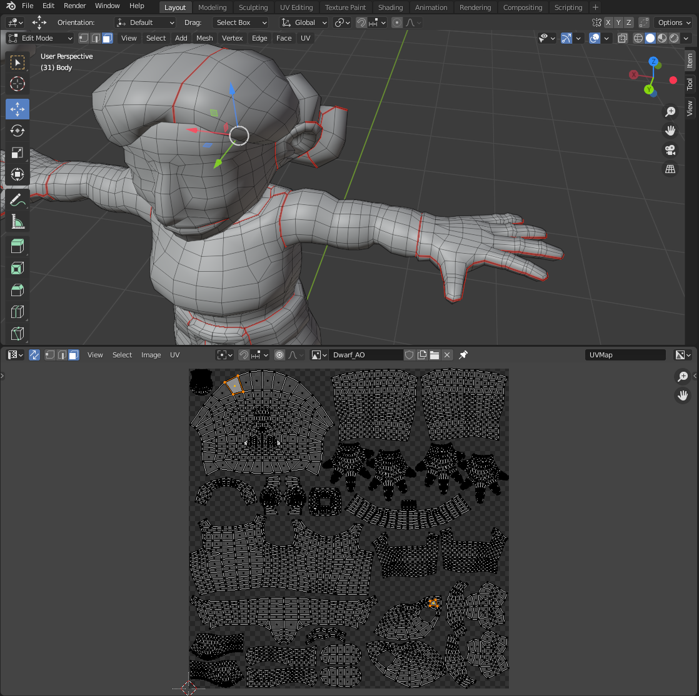
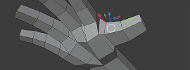

DESCRIPTION:
The following tutorials cover introductory topics in Blender.
Blender is free, open source 3D Art and Animation software. It is used for film and game development, as well as for research and other projects. As of version 2.8 (2018), it is comparable to any other professional 3D package, and also offers tools for compositing animation with live film, and for 2D animation tools.
LEARNING OBJECTIVES:
Students will have the opportunity to learn 3D fundamentals in Blender: manipulating 3D space and objects, basic modeling, texturing, lighting, animation, rendering.
HARDWARE REQUIREMENTS:
Blender is FREE on both Mac and PC systems.
- You need a 3-button mouse for navigation!
- 3D Software runs best on a system within a few years of its current version. Buying a new system? Consider an Intel i7 with an Nvidia graphics card.
TUTORIAL BREAKDOWN
02. Object Modeling
03. 3D Animation
04. Textures
05. Character Modeling
07. Physics Simulation
08. 2D Animation: Grease Pencil
09. Unity Pipeline! Basic Assets and Animation

LESSON #1: Blender 3D Navigation
Welcome to Blender! Let's start getting acquainted.
Open the program, Delete the default Cube:
Select the Cube and Hit the [Delete] or [x] key.
This is a very Pro Blender way to begin.
Someone even made a film about it.
Using upper-right viewport controls:
- Orbit: Click-drag the Cartesian Navigation gizmo to orbit around
- Pan: Click-drag the hand icon pan across the scene
- Zoom: Click-drag the Magnifying glass icon to zoom in/out.
Using a 3-button mouse (optimal):
- Orbit: MiddleMouse click-drag to orbit around the scene
- Pan: [Shift]+MidMouse click-drag to pan across the scene
- Zoom: [Ctrl/Cmd]+MidMouse click-drag to zoom in/out of the scene
Use the Cartesian Navigation Gizmo in the UpRight corner or the NumPad to switch between views.
GIZMO:
Front / Back = ,
Top / Bottom = ,
Sides =
NUMPAD:
Front = [1],
Top = [7],
Side = [3],
Persp = [5], etc:
OR, hit [~] in keyboard upper left for all these controls.
MiddleMouse-drag the view back to Perspective view.
SELECTION:
LeftClick off the Cube to de-select it.
To select it: Hit [w] for select tool and try to click the Cube.
To see the current Drag Type hit [g] for the move tool.
Change the drag type to "Select Box" to be able to click anywhere on the cube, or to select around or through it.
An object can also be selected by name in the Outliner (upper-right).
The "eyes" on the right can be toggled to change an object's visibility.
To lock an object so it cannot be selected, first open filters (upside-down test-tube icon in upper-right), enable the arrow icon, and in the new column click the arrow to toggle select-ability.
Use Left column buttons for precision Move, Rotate and Non-Uniform Scale by click-dragging gizmo arrows or circles.
Red Arrow = X (side / side),
Green Arrow = Y (Front / Back),
Blue Arrow = Z (up / down).
Click the Move tool to see Transform Orientation on the top bar. This is set to Global by default, which puts the Transform axis at world parallels. Change this to Local in order to move an object according to its own axis (try this on the already tilted camera).
TRANSFORMS #2:
Use keyboard shortcuts:
- [g] = Move ("Grab")
- [r] = Rotate
- [s] = Scale
- Don't click to activate a keyboard Transform: Just drag.
- LeftClick to end the keyboard Transform.
- To Transform on a specific axis, hit the key for that axis:
[x]-axis (sides), [y]-axis (front/back), [z]-axis (up/down). - Hold [Shift] during a Transform for slower, fine control.
TRANSFORMS #3:
Hit [n] to open Item/Transforms panel.
Type values and hit [Enter] to commit the changes.
Set Transforms back to 0,0,0 (position and rotation) and 1,1,1 (scale)
Object-level Scale or Rotation can adversely effect later operations, like Modifiers. These changes can be "baked" into the mesh:
Hit Object > Apply (or [Ctrl/command] + [a]) and choose the Transform/s to Apply (this is called "Freezing" or "Baking" Transforms in other programs).
To Apply all transforms choose"All Transforms to Delta"
DUPLICATE OBJECTS:
Select one or more objects.
Hit [Shift] + [d] to duplicate.
Note the move tool is automatically applied, so hit [x], [y], or [z] and then drag in that direction.
To switch ANY panel to a different editor:
hit the "Editor Type" button in the viewport's upper-left corner:
(a). SCENE PANEL:
Central work area.
Defaults to perspective 3D Viewport, and can be changed to other panels (TopLeft "Editor Type" button).
Hit [z] to switch display modes (Wireframe, Solid, Materials, Render).
Note operation menus at top-left:
Object Mode, View, Select, Add, Object.
To add more Panels (split a Panel into two):
Hover over the Scene view UpperRight corner
Lower right panel. A column of tabs to access the properties of the selected object:
All geometry is hollow.
(mouse becomes a crosshair icon).
Click-drag to left or down to split the view.
 To merge Panels together:
To merge Panels together:
Find a panel edge center
(mouse becomes a 2-way arrow icon).
RightClick to choose "Join Area".
Click on the arrow in the view to be joined
(only works if views share full edge).
The Navigation Gizmo is in the UpperRight.
Also note the options above the Gizmo (may need to make Blender full-screen), especially X-Ray mode, which lets us LOOK through the object and also allows us to SELECT through the object.
(b). OUTLINER (right, upper):
UpperRight panel. A select-able list of objects.
DoubleClick an item to change the name.
Object Visibility:
In the scene, hit [h] to hide a selected object.
It is grey in Outliner.
Hit Outliner eye-icon to make it visible / invisible, or [Alt/Option]+[h] to unhide all.
Using Collections: Empty nodes in the Outliner, act as folders:
Hit [c] to make a new Collection in the Outliner. Drag objects into it.
They can now be made visible / invisible together.
In the Outliner, select an object and hit [m] to move it to a Collection by name (be sure to hover over the Outliner when hitting [m]; it means merge selected geometry in the viewport).
(c). PROPERTIES (right, lower):
Try Boolean, Displacement, Wireframe, and Mirror.
Modifiers order matters: they are performed top to bottom.
Adjust materials there or in the Shader Editor.
(d). MENUS (top):
Basic File and Edit in the upper-left, then the rest are BUTTONS to switch to varied workspaces for Modeling, Sculpting, UV Editing, Animation, etc, along with different options visible in the top bar ("Layout" is the default option for the Blender windows. Try switching to "Modeling").
Below the top bar, in the upper left are controls for Viewport layout and then Object Mode (full object manipulation) vs Edit Mode (change object components: vertices, edges, and faces -- see lesson #2).
(e). TIMELINE (bottom):
Along the bottom. Set and manage keyframes (hover over a property nd hit [I]), playback controls and scrub the Playhead.
See Lesson #3
The "normal" is the direction the actual face is rendered
(often represented as an arrow perpendicular to the face).
To see the tris poly count for all objects:
RightClick the bottom black "Status Bar".
Choose "Scene Statistics" (will display in that bar, far right).

This first exercise is about gaining comfort with basic scene navigation and object Transforms.
3D content is meant to be seen in motion: Orbit as you work! (MiddleMouseClick+drag)
STEP 1.1: Create your 3D Scene:
- Click [Add] > Mesh in the second-to-top menu to create 8+ mesh objects (cube, cylinder, torus, etc).
- Click the move tool to move them away from center (or hit [g] and axis: [x], [y], or [z]).
- Stack all of these objects into an interesting tower:
- using Transforms (move [g], rotate [r], scale [s]).
- Use the toolbar tools (column on the left) or keyboard shortcuts.
- Move the bottom-most object/s up to stand on the perspective grid.
- using Transforms (move [g], rotate [r], scale [s]).
- Use Scene navigation to look around as you work:
- Click-drag the Cartesian Navigation and other gizmos (upper right) or use these shortcuts:
- Orbit: MidMouse, Pan: [Shift]+MidMouse, Zoom:[Ctrl/Cmd]+MidMouse
STEP 1.2: Set Camera Framing:
Position and angle the Camera to view the full tower:
- Split the View panel:
- Hover the Scene UpperRight corner to get the crosshair icon
- Pull down to add a viewport
- Navigate(orbit, pan, zoom) in one view to the desired Camera angle and framing, to center the tower in the view.
- In the Outliner select the Camera object.
- Hit [Ctrl]+[Alt]+[Numpad 0] to snap the Camera to this view, with a shaded frame.
- Hit [Numpad0] to toggle the viewport between the Camera view and regular 3D view (or hit the camera icon in the navigation tools, or hit [~] to toggle View Camera).
- Hit [Ctrl]+[Alt]+[Numpad 0] to snap the Camera to this view, with a shaded frame.
- To adjust the Camera distance:
- Click the Move gizmo.
- In the non-camera view, find the Camera and select it.
- In the top bar change Transform Orientation from "Global" to "Local".
- See the Move gizmo on the Camera point in the angled Camera direction.
- LeftClick+drag on the blue Z axis away from the tower, and see the framing in the Camera view change.
- Adjust until the full tower is inside the Camera frame.
- Click the Move gizmo.
STEP 1.3: Create GROUND PLANE:
Create a Plane to Catch Shadows:add > Mesh > Plane.
Optionally, use the Move tool (hit [g], then [z]) to lower the Plane until it touches the base of your tower.
In the Shading Rendering view (next step) we will see shadows cast on this plane.
STEP 1.4: Set LIGHTING: Add lights and colors to enhance 3D space
- In the Camera view, in the UpperRight corner, change the Viewport Shading to "Rendered" (click the rightmost sphere icon). The lighting is now based on the default scene Point Light, and will change as we adjust that light's Transforms or properties.
- In the Outliner select the Light.
- In any view Move [g] the Light to see how this effects the Tower lighting.
-
In the Properties panel (LowerRight) open the second-to-bottom tab (lightbulb icon when a Light is selected).
- Try changing the light type (Point, Sun, Spot, Area), and properties like Color and Power (default =1000), turn shadows off or on, etc.
-
Add additional lights:
Add Lights > (choose a type) or duplicate your first light [Shift]+[d]
Change settings and arrange around the model. For example, to enhance the volumes, set one light slightly blue and the other slightly red, up strength to 3,000, change to Area lights, and put at opposing sides of the model.
STEP 1.5: Render:
- Hit [F12] to Render In the Render window:
- In the Render window, open Image menu > Save As.
- In the Save As window, choose file type UpperRight (PNG), set name and destination, click [Save As Image].
Optionally: Enable Background Transparency:
To render an image with no background for compositing:
In the Properties panel:
Output tab (printer icon): set Output > Color = RGBA (allows alpha).
Render tab (radio icon): set Film > Transparent = on.
NOTE: [f12] on a Mac computer is a sound control.
Hold function key [fn] and hit [f12]
STEP 1.6: Save Your Work:
File > Save As, YourName_ObjectName.blendSave every few minutes ([Ctrl/Cmd]+[s]).
Save As ([Shift]+[Ctrl/Cmd]+[s]) every hour or so to create a new file, to guard against crashes / corruption: _ObjectName01, _ObjectName02, etc.
STEP 1.7: Export the tower to Import into UNITY:
(see tutorial #9 for more Blender-to-Unity)
BLENDER:
- SELECT: With the select tool enabled, [Shift]+ select all the objects. Select the bottom object last, so the final pivot will be near the bottom.
- JOIN: Object > Join or Hit [Ctrl / command] + [j] to make them all into one object.
- EXPORT: With the tower selected:
- Open File > Export > FBX (.fbx).
- In the Export window, upper-right, choose Include > Limit to > Selected Objects so only the tower exports.
- Set file location, file title, then hit [Export FBX].
UNITY GAME EDITOR:
- With your 3D project open, RightClick in the Assets panel to choose Import New Asset.
- Choose the FBX from Blender and it will appear in the Assets folder.
- Drag the FBX mesh from the Assets folder into the Hierarchy to add it to the Unity level (Scene).
TROUBLESHOOTING:
Q: Where did my object go?
A1: Center your object in the view by selecting it by name in the Outliner and hitting NumPad [.] or [~] > View Selected
A2: Or perhaps you selected the object and hit [h], which hid it? Try hitting [Alt/Option]+[h] to unhide all.
Q: I hit a button, and now I am locked into a function where nothing else seems to work. What do I do?
A: Hit the [Esc] key to break out of that function and return to normal controls
Q: Are scale and rotation not working on your objects?
A: You found the Affect-Only Location setting! With the Transform tool selected, open Active Tool tab, and under Options > Transform > turn off any "Affect Only" options, especially "Locations"
LESSON #2: Editing an Object
Moving primitives to build shapes is good for roughing out a space, but detailed modeling means Cutting, Extruding, and Transforming Vertices, Edges, and Faces to get the precise form and details you intend.
- Delete the default cube.
- Create a new Cube: Add > Mesh > Cube.
Select the Cube, Hit [Tab] for [Edit Mode].
(or in UpperLeft corner switch [Object Mode] to [Edit Mode]).
This allows component mode selection (vertices, edges, and faces), Transforms of those components, and other editing (like cutting and extruding).
Choose Vertex, Edge, or Face Components by clicking icons next to [Edit Mode] in the upper left corner.
Or use keyboard shortcuts: Vertex [1], Edge [2], Face [3].
- Select part of the mesh: Choose a component type, hit [w], and LeftClick the object part to select it. Hold [Shift] to add to the selection.
Note the select modes in the top bar, which you can toggle through by hitting [w] repeatedly.
- Transform the selection: Use Move [g], Rotate [r], or Scale [s] to transform it ([x], [y], [z], to choose a direction).
- Expand/Shrink Selection: Select a face, [Ctrl/Cmd]+[+] to expand how much is selected, [Ctrl/Cmd]+[-] to shrink selection.
- Select a loop: In Edge or Face mode, select one edge or face, hold [Alt / Option] and select a neighbor to select an entire loop.
- Soft-Select ("proportional editing"): Select a component, like a vertex. Hit [o] to transform the surrounding geometry according to a threshold. Hit [o] to return to normal selection.
- Select through the model: By default, selecting components around a mesh only effects the Faces, Edges, or Vertices facing the view. The back side is not effected ("back face culling").
To select through the model enter wirefarme or X-ray mode.
The following are tools for cutting and extruding geometry to create new forms.
For more tools (like the boolean modifier) see Lesson 5: Character Modeling
- [Extrude] / [e]: Select a face, hit Extrude to pull out new geometry on the face "normal".
- [Inset] / [i]: Create a new "inward extrusion" on the model surface.
- [Bevel] / [Ctrl]+[b]: Select a corner edge, hit bevel to make rounder (splits and separates into more edges). Use the tool menu (LowerLeft) to choose the number of Segments (divisions).
- [Knife] / [k]: Hit Knife to click on edges, vertices, or faces to cut new lines into the geometry. These can then be Transformed or Extruded
- [Loop Cut] / [Ctrl]+[r]: Hit Loop Cut to cut a smooth Edge Loop line around the entire form. In the tool menu (lower-left) change the number of segments, and then non-uniform Scale to set distance.
Hold down the Edge Loop button to switch it: Offset Edge Loop Cut. With Offset Edge Loop Cut activated, LeftClick and drag on a previously cut Edge Loop to spread-cut new edge loops around the first.
Draw a line between two selected vertices (called "connect" in other programs): select the vertices, hit [f]
Select a Face or Edge and hit [Delete] or [x] for delete options:
- Make a hole: Select a Face, hit [Delete] / [x], choose "Face".
- Dissolve an Edge: Made an Edge you do not want?
Select it (or the entire loop with [alt]+select neighbor), hit the [Delete] or [x] key, choose "Dissolve Edge".
Merge [m] as Vertex target weld (snap one vertex to another and merge them): Select two or more vertices, hit [m] and from the menu choose "At First" or "At Last" to snap /merge the vertices to the first or last selected.
To make an Edge between Faces appear smooth, select the Faces, RightClick and choose "Shade Smooth" (Or Modeling menu > Mesh > Normals > Shade Smooth). This has the benefit of showing you prblematic geometry!
To make an Edge between Faces appear sharp, select the Faces, RightClick and choose "Shade Flat" (Or Modeling menu > Mesh > Normals > Flat Smooth).
USE X-RAY MODE FOR SEEING AND SELECTING:
- Find the X-Ray Mode button in the viewport UpperRight, a Double-square icon before the Viewport Shading options.
- Turn this on to see through the model, and backfaced components can be selected / Transformed along with front-facing components.
SCALE WITH INDIVIDUAL ORIGINS
By default, scaling multiple faces will also scale the distance between them:
- Divide up a mesh and select non-adjacent Faces.
- Hit [s] and drag to Scale. The distance between the faces scales along with the faces themselves.
To not change the distance when Scaling (keep distance consistant), we need to turn on "Individual Origins".
- In the top bar, next to Transform Orientations (Global or Local), find the "Transform Pivot Point" options.
- Switch from "Bounding Box Center" to "Individual Origins".
Now scale the faces, and the distance between them is unchanged.
Modeling is about solving problems by combining tools in different ways.
Let's make a chair by combining LoopCut, Extrude, Bridge, and Transforms.
STEP 2.1. Start with a new file.
Delete the default cube. [Add] > Mesh > Cube.
STEP 2.2. Size the Seat:
- Click the Move tool, click+drag the blue Z axis to lift Cube up.
- Click the Scale tool, click+drag the blue Z axis to non-uniform scale vertically: shorten to make the chair seat.
STEP 2.3. Enter "Edit Mode": Hit [Tab]
(or switch [Object Mode] to [Edit Mode] in UpperLeft corner)
STEP 2.4. Cut and Extrude the Legs:
a) Cut lines to make corner Faces for Extruding:
- Click the LoopCut tool to cut a line around the cube width.
- In the tool menu that appears LowerLeft:
Set "Number of Cuts" = 2, then non-uniform Scale to widen distance until these lines are about 10% from the sides.
Accidentally de-select these Edge loops before scaling? Re-select:- Hit [w] for the Move tool.
- Click one Edge, hold [Alt / Option], and click a neighbor edge on the same line to auto-select the full loop.
- Hold [Shift] to click an Edge of another loop, release [Shift].
- Hold [Alt / Option] to click its neighbor for the full loop.
- Repeat to make two lines around the depth, so that there is a small square at each corner on the Cube top and bottom.
b) Select the corner Faces to be Extruded:
- Orbit to view the bottom, four corner square faces.
- In Face mode, select one, hold [Shift] to add the others.
c) Extrude the legs:
- Orbit to a slightly more side-on view.
- Hit [e] for Extrude, hit [z] for the Z-axis, pull down the Extrusion.
- LeftClick to end the pull.
STEP 2.5. Extrude the Back:
Orbit to view the chair top, and select faces to extrude the chair back. Consider these two methods:
a) Bridge Faces window:
- Select all three faces along one side.
- Hit [e] to extrude and drag up the entire side, LeftClick to end.
- Repeat: Hit [e] and drag up, LeftClick to end.
- Select the bottom middle faces front and back from the first extrusion, RightClick to choose Bridge Faces to punch a hole through, leaving supports for the back at either side.
b) Bridge Faces Back:
- Select just the two corner faces on one side.
- Hit [e] to extrude and drag up two poles, LeftClick to end.
- Repeat: Hit [e], drag up, LeftClick end.
- Select the inward facing faces of the upper extrusion, RightClick to choose Bridge Faces to create geometry between them.
STEP 2.6. Curve the Back:
-
To change the chair's back so that it curves:
- Use LoopCut to draw 3 vertical lines.
- Select those lines and move them all backwards a little bit.
- Select just the center line and move it back a bit further.
STEP 2.7. Shade Smooth / Shade Flat:
- Select the faces on each side of the curved chair back.
- RightClick to choose Shade Smooth.
To change shade smoothing across the entire model:
- In Face mode hit [a] to Select All.
- RightClick for Shade Smooth (or Shade Flat for a faceted look).
STEP 2.8. Taper Chair Leg Bottoms:
We can Scale each chair leg bottom face individually, but for precise and consistent results we should Scale all feet at the same time. BUT, by default, scaling multiple faces will also change the distance between them.
Use "Individual Origins" To not change distance when Scaling:
- In the top bar, next to Transform Orientations (Global or Local), find the "Transform Pivot Point" options.
- Switch from "Bounding Box Center" to "Individual Origins".
- Hit [s] to drag-Scale the feet, and the distance between them is unchanged.
- When finished, reset Transform Pivot Point to "Median Point" (the selection average).
STEP 2.9. Move the Pivot to the bottom:
- Move the chair to stand at the world center (the "Origin").
- Select the chair in Object Mode and move the pivot:
Object menu > Set Origin > Origin to 3D Cursor
This allows the object to be scaled larger or smaller without changing its position on the ground.
TROUBLESHOOTING:
Q: When I try to select a component, why does Blender select the ones around it as well?
A: Try changing the top bar Drag mode back to Active Tool or tweak (instead of Circle, etc).
Q: In Edit Mode, in the Select tool [w], I cannot select around components.
A: Try switching the menu from Layout to Modeling, and set the Drag mode to "Select Box".
Q: In Edit Mode, in the Move tool [g], Select modes are not appearing in the top bar.
A: Try changing Drag mode to Select Box.
Q: I tried to use [Delete] or [x] > Edge Dissolve, and the selected edge does not disappear. What happened?
A: It could be that the edge you are trying to remove is actually many Edges, created with accidental Extrudes.
This will take multiple Dissolves to remove (or, do a vertex Merge at a low threshold: select all vertices in that area, hit [m], choose a low value like 0.001).
OR, it could be that you have interior geometry. Try entering Wireframe mode to orbit and look inside for triangles that cross the inside of the form. If you find any, zoom inside, select the face/s, and [Delete] / [x].
Q: The cursor point got moved. How do I return it to the world origin?
A: Hit [Shift]+[s], choose [Cursor to world center].
You can then move an object's pivot to the orgin: With object selected, hit [Shift]+[s] again, choose [Selection to cursor].
Clean up broken geometry:
- Fill a hole: select opposing edges and hit [ f ] for "fill" (like "bridge" in Maya).
- Use knife to cut in new edges. Use to connect vertices or otherwise create quads.
- To snap one vertex to another: Select a vertex, [shift]+select another, hit [ m ] for Merge, choose "last" (like Target Weld in Maya)
- To select an edge loop: select an edge, hold [alt/option] and select a neighboring edge
- To delete a selected edge or face: select, hit [x] choose edge or face.
- To "dissolve" an edge loop: select the edge loop, hit [x] and chose "dissolve edge"
- Have weird shadows on the surface? If you have no interior geometry, it may mean the surface normals are mis-aligned. Select all faces, hit [Shift]+[n] to recalculate the Normals (the direction of each face, should all be "outward").
EXERCISE 3a: Animate an Expressive Box
EXERCISE 3b: Animate a Solar System
LESSON #3: Intro to 3D Object Animation:
Every motion in 3D Animation requires at least two keyfames: an initial keyframe with the start value and an end keyframe with the changed value. Blender interpolates the motion between those keyframes.
To vew the Timeline, choose the "Layout" option in the top menu (Timeline should be at the bottom). To vew the Graph Editor instead of the basic Timeline, we switch the panel contents (click the upper left button in the panel).
The Timeline is a linear visualization of all animation for selected objects. It is incremented as frames, 30 frames per second. Set the active frame range length in the UpperRight corner.
A Keyframe contains time and value information for a specific object parameter, such as Position on the Z axis.
Every movement takes at least two Keyframes: an initial value at one frame, and the changed value at a later frame.
On the Blender Timeline, a Keyframe is a white diamond (yellow if selected). A single Keyframe in the Timeline may actually be multiple keyed parameters stacked on the same frame.
If the keyframe is dragged to a new frame, the animation timing changes. Moving two keyframes closer together creates faster motion (less time to cover the same change in value). Motion is more interesting and expressive if the timing varies.
"Bookends" in 3D animation are two identical keyframes at different times. Changes between them do not effect the timeline outside of them, and changes outside of them do not effect the timeline between them.
An "Animated Hold" is two keyframes that are almost but not exactly identical, to show a pause-in-motion. This can indicate character attention and thought, and helps prevent a rubbery "constant motion" appearance in your animation.
By default, most movements include ease-in and ease-out (slow at start, pick up speed, slow at end). This is seen in the Graph Editor as an S-curve, and in cases where a more constant motion is preferred, the keyframe bezier handles can be adjusted to make a straight diagonal line.
The 12 principles of Disney Animation apply as much to 3D work as they do to 2D. Consider Squash and Stretch to show flexibility, force, and impact, moving in arcs to create organic motion, and anticipation to focus viewer attention on the coming action (as well as to show character intention and flexibliy). All of these ideas should be considered when animating to create expressive, impactful results.
Start with a new file:
Delete the default cube.
Create a new Cube: Add > Mesh > Cube.
In the Timeline (bottom), Scrub the Playhead to frame one (1), left.
(a) SET INITIAL KEYFRAME:
RightClick the Cube, choose "Insert Keyframe" and "Location".
This sets a Keyframe for the position of the Cube at that frame.
NOTE: An object must be selected to see its keyframes in the Timeline.
Other ways to set an initial keyframe:
- Hit [n] to open Item / Transforms, hover over a transform (like position) and hit [i] to insert a keyframe to just position (turns all three axis yellow).
- Or, to add a keyframe to a single axis, select that axis (like Rotation Z), RightClick and choose "Insert Single Keyframe"
(b) USE AUTO KEYING to create more keyframes:
- Turn on the Auto Keying button (little circle "record" icon next to playback controls).
- Scrub the Playhead to a new time (or hit right / left arrow keys).
- Move the Cube. A new keyframe is auto-created!
- Scrub to a new time, Move again for a 3rd key.
- Hit [Play] ([spacebar]) to see the motion.
Because (1) the Auto Keying button is on, and (2) a keyframe already exists for the Move transforms, any (a) moves at (b) other times will create new keyframes (and any moves at existing keyframes will change them).
Changing Rotation or Scale in this example will not yet add a new keyframe, because there is not yet an initial keyframe for those Transforms.
(c) COPY / PASTE KEYFRAMES:
Keyframes can be directly selected in the Timeline, moved to change timing, duplicated, and deleted.
- Select all three keyframes (select around or hold [Shift] to add to selection).
- RightClick the timeline to choose "Copy" (or [Ctrl/Cmd] + [c]).
- Scrub the Playhead later in the Timeline.
- RightClick to choose "Paste" (or [Ctrl/Cmd]+[v]).
(d) KEYBOARD SHORTCUTS TO NAVIGATE THE TIMELINE:
In addition to scrubbing the timeline with a mouse, we can use keyboard shortcuts:
- Up and Down arrows to move forward and back one KEYFRAME
- Right and Left arrows to move forward and back one FRAME.
- Set range: at TopRight of timeline set the start and end of the clip you wish to render.
- In the Properties panel (right column below Outliner), click Output Property tab (towards top, printer icon) to set Resolution (Frame Size). 1280x720 recommended.
- Choose the output path for the render (super important! Displays /tmp\ by default).
- Choose the File Format for the output.
Usually choose a PNG or JPEG sequence in its own folder, and compile in After Effects, iMovie, etc.
An AVI is good for a quick render test, or FFmpeg video, with encoding set to container = mpeg4.
- Set your Camera angle and framing in the viewport.
- Hit [Ctrl]+[F12]. Watch progress in the timeline.
(a) PARENT GEOMETRY:
- Select two objects in [Object Mode]: first the intended Child, then the intended Parent.
- PARENT: Hit [Ctrl / Cmd] + [ p ], choose "object".
Now, any transforms applied to the parent will apply to the child.
- UN-PARENT: Select the child, hit [Alt / Option]+ [ p ] and choose "clear parent".
(b) FOLLOW A PATH:
Consider animating Camera or Rocket along a path by using the Follow Constraint:
1. Set Up Path, Empty, and Follow Constraint:
- [Shift]+[a] to create a Curve > Path. Adjust points for desired curve.
- [Shift]+[a] to create an Empty > Plain Axis.
- Important: in Object tab, set Empty position to 0,0,0 before applying the next step (constraint)
- With Empty node selected, Constraints tab > Add Object Constraint > Follow Path.
- In Follow path window, choose target: click eye-dropper and choose the Curve. Empty node jumps. Scrub Offset value to see motion.
2. Use this constrained node to move a mesh:
- Select the mesh, select the node.
- [Ctrl / Cmd]+[c], choose Copy Location.
- [Ctrl / Cmd]+[c], choose Copy Rotation.
- [Ctrl / Cmd]+[Space], choose Set Parent (LowLeft)
3. Animate along the path:
RightClick the Offset value to set a keyframe, to animate along the curve.
(c) JOINT RIGGING:
Please see more robust explanation below, Lesson #6
- Summary of the full Armature rigging process
- Summary of joints for Inverse Kinematics (IK) controls.
- Full steps for bipedal character rigging
- Rig a character using Rigify add-on
Connect Mesh to a joint Rig:
- Select all mesh parts first, then select the rig root control last.
- Hit [Ctrl/Cmd]+[ p ], choose "Automatic Weights" from the tool menu.
In the top left, switch from Object Mode to Pose Mode for rig controls and posing.
To Insert a keyframe on selected object, at current time: [ i ]
Change Timeline:
- Zoom in and out of Timeline: Hover mouse over the Timeline and Scroll the middle-mouse scrollwheel.
- To move forward / back in time: Hold [Alt] + Scroll wheel.
- Click and drag the ends of the gray bar at the bottom of the Timeline.
Shortcuts to Move the Playhead:
- to previous /next 1 frame: [LeftArrow] / [RightArrow]
- to next / previous Keyframe: [UpArrow] / [DownArrow].
- to next / previous 10 frames: [Shift]+[UpArrow] / [Shift]+[DownArrow]
- to Timeline Start / End: [Shift]+[LeftArrow] / [Shift]+[RightArrow]
For this exercise, animate a simple cube with Transforms to create the appearance of a living, thinking character.
Part 3a.1: Make a Cube to be your Character:
- Create a Cube: Add > Mesh > Cube.
- For a more vertical "character": Scale Z =2 and Position Z =2
- Object > Apply > Scale to bake in these changes.
Part 3a.2: Create the Start and End Keframes:
- Move the Cube on X about 20 grids to the left of center.
- Set an initial keyframe for all Transforms.
- Turn on Auto Keying.
- Scrub Playhead to frame 120.
- Move the Cube on X about 20 grids to the right of center, and set keyfrmes on all transforms (RightClick > Insert keyframe)
- Note the new keframe. Hit Play to see motion, turn off Play.
Part 3a.3: Create a Bookend pause in the middle:
- Scrub to the center (60), set a Keyframe on all Transforms.
- Select that Keyframe and slide it back to frame 40.
- [Ctrl/Cmd]+[c] to copy the keyframe values
- At frame 100 [Ctrl/Cmd]+[v] to paste a duplicate.
- Hit Play to see the pause between the bookends:
Note the longer time before the pause means the cube moves slower to get to the pause, and runs faster away from it.
This is interesting: what happened in-between?
Part 3a.4: Add performance in the pause:
- Look Right:
- At frame 55 rotate the box to its right, as if looking in that direction, and a bit up.
- At frame 62 rotate a bit further in that direction, to make an Animated Hold of the Cube looking to the right.
- At frame 55 rotate the box to its right, as if looking in that direction, and a bit up.
-
Look Left:
- At frame 75 rotate the box to its left, as if looking in that direction and a bit up.
- At frame 86 rotate a bit further in that direction, to make an Animated Hold to the left.
- At frame 75 rotate the box to its left, as if looking in that direction and a bit up.
-
Jump in Fear:
- At frames 86 and 100 add Keyframes to all Transforms. At frame 92 raise the Cube a bit, to indicate a jump in fright.
- Hit Play to view the performance. Turn off Play.
- At frames 86 and 100 add Keyframes to all Transforms. At frame 92 raise the Cube a bit, to indicate a jump in fright.
Part 3a.5: Animate the Cube Bouncing to the Pause:
- Bookend the down positions: set keyframes on all Transforms at frames 13 and 26.
- Raise the Cube up at frames 7, 20, and 32 for three bounces.
- Hit Play. Note the weird, rollercoaster, too-smooth movement through the down poses. We want sharp bounces! Turn of Play.
Part 3a.6: Use the Graph Editor to Sharpen the Bounces:
- Split the scene view and switch the lower panel to the Animation Graph Editor.
- In the Timeline select around the first 40 frames and in the Graph Editor hit [Numpad .] to focus on that part of the animation.
- Note the blue up-and-down graph for Z-Position.
- Move the bottom bezier handles closer to the keyframes to sharpen the bottom of each bounce.
- Move the top bezier handles further from the keyframes to lengthen the time in the air.
- Hit Play. The bounces should look better! Turn of Play.
Part 3a.7: Add Organic Flexibility to the Bounces:
- At each downpose keyframe set Scale parameters for a squash: Z= 0.2, X = 1.5, Y = 1.5.
- A couple frames before and a couple after each downpose keyframe, set Scale for a stretch: Z =1.2, X and Y = 0.8.
- Enhance the motion further with Rotation that follows the arc of each jump: at the stretch poses, rotate on the Y axis towards each jump apex (around 17-20 degrees).
- Hit Play to view the more flexible jumping motion.
Part 3a.8: Further Exploration:
- How might squash and stretch scaling enhance the pause motions: looking around and jumping in fright?
- What movement would make sense, and be appealing, for the run away at the end?
Render your animation! See notes [E], above.
STEP 3b.1:
SET-UP
- Create a sphere: Add > Mesh > UV Sphere
- Hit [n] to open Transforms.
- Scale X, Y, Z = 20
- With the Sphere selected: Object > Shade Smooth.
- In the Outliner, rename the Sphere "Sun"
- Duplicate the Sphere 9 times for the full and dwarf planets in our solar system: [Shift]+[d] to duplicate and move, [x] to move along the X-axis.
- Move the planets out on the X-axis (to the left).
Scale and name them according to the following chart
(sizes and positions can be adjusted as you choose):
| NAME | |||
| Sun | 0 | 20.0 | |
| Mercury | 50 | 1.0 | 60 |
| Venus | 70 | 1.5 | 80 |
| Earth | 90 | 1.5 | 120 |
| Mars | 110 | 1.0 | 140 |
| Jupiter | 160 | 5.0 | 250 |
| Saturn | 190 | 4.0 | 300 |
| Uranus | 220 | 3.0 | 350 |
| Neptune | 250 | 3.0 | 400 |
| Pluto | 280 | 1.0 | 450 |
To apply the texture, see the next tutorial
(and apply the same texture map to BaseColor and Emission).
STEP 3b.2: RIG FOR ANIMATION
- Create a circle: Add > Mesh >Circle
- Hit [s] and drag to scale until it reaches Mercury.
- Name it circle_Mercury
- Add 8 more circles, scale and name for the other planets.
- PARENT: For each pair, select the planet, [Shift]+select the circle, then hit [Ctrl/Cmd]+[p].
Test a circle-planet connection by clicking the rotation button and rotating on Z (blue). The planet should move with the circle (and the circle will not render by default).
STEP 3b.3: Set Camera for this Large Scene:
- Split the view vertically (hover UpperRight corner for cross hair, drag down).
- Choose a distance and an angle from which to view all spheres, and hit [Ctrl/Cmd]+[Alt]+[NumPad0] to set the camera to that view. Hit [NumPad0] to exit camera view.
- With Camera selected: In Properties panel > Camera tab (Object Data), set Viewport Display > Size = 500 (type and hit [Enter]).
Click the Move tool, set Transform Orientation in top bar from Global to Local, and move the camera back until the end of its 500-length cone touches the planets.
- If we look through the camera [NumPad0] we do not see the planets. They are beyond the Camera Clipping Plane.
With Camera selected, open Properties panel > Object Data (camera icon). Set Far Clip Plane = 1000.
- The viewport also has clipping planes.
If your content disappears at the distance you want to view it, In the viewport, hit [n] and switch the tab from Item to View. Under Focal Length, change Near and End clipping planes as needed.
STEP 3b.4: Animate the Planets:
-
Set Initial Keyframes:
- Select Circle_Mercury.
- Hit [n] to open Item Transforms.
- RightClick the Rotate Z channel, choose Insert Keyframes
- Repeat for all circles.
- Select Circle_Mercury.
- Set End Keyframes for each Selected Circle:
- For each circle, choose an end-frame for the full turn. Earth takes one year, Jupiter takes 12 years.
- Turn on Auto Keying.
- Drag the scrubber to the frame you want to end the turn.
- Type 360 into the Rotate Z channel and hit [Enter].
- A new keyframe is added to the timeline (due to Auto Keying).
Hit Play [Spacebar] and note the turn is not consistent: it starts slow, speeds up, and ends slow.
- For each circle, choose an end-frame for the full turn. Earth takes one year, Jupiter takes 12 years.
- Fix Animation in the Graph Editor
- Switch the bottom viewport to the Graph Editor.
- Hover over graph, hit [NumPad .] to fit graph lines to viewport.
- The graph bottom is time and the height is value.
- Note the Blue S-shaped curve.
- Blue = Z (in this case, rotation).
- The S shows the slower movement at the start and the end, and the faster movement in the middle.
- For consistent movement, drag the Bezier Handles surrounding the keyframes at each end to make the line straight.
- Switch the bottom viewport to the Graph Editor.
- Add LOOPING, so each circle continues turning past their keyframes:
- Select a circle and then select the keyframes in the Timeline.
- Hit [Shift]+[e] and choose "Cyclic F-Modifier" to make it loop forever.
- To remove the looping, hit [Shift]+[e] and choose "Constant".
- Select a circle and then select the keyframes in the Timeline.
STEP 3b.5: Add Additional Animated Elements:
Consider the asteroid belt between Mars and Jupiter, moons, rockets, alien visitors -- have fun!
Want the sun to have a glow?
- Open Properties panel > World Properties tab.
- Change the background color to black, to make the glow easier to see.
- Select the Sun sphere. Open the Properties panel > Material tab.
- Find the Surface channel near the top.
- Click the default type "Principled BSDF" and change it to "Emission"
- Try a higher strength, like 10.
- Finally, in the Properties panel > Render tab, turn on the "Bloom" option.
- To adjust the glow size / intensity, change Strength in the Material panel.
Want the glowing object to actually cast light in the room?
This works automatically in Cycles rendering.
For Evee (the default, quicker render), there are more steps. Try this tutorial.
STEP 3b.6: Render your animation!
You can render as an MP4 or as a PNG sequence (to then compile into a film file with sound in After Effects, etc).
See steps to the left: part [D] Render a Film.
TROUBLESHOOTING:
Q. Are your Keyframe Bezier Handles in the Graph Editor moving the entire keyframe instead of shaping the curve as expected?
A. Turn off the Proportional Editing button in the UpperRight of the Graph Editor.
LESSON #4: Basic Textures:
Textures allow us to heighten the realism of an object with color
or by changing the way light reacts to the surface.
We can also create the appearance of small details with a bump map, cut holes with an opacity map, or make parts glow with a self-illumination map.
- Select a Mesh object in the Outliner (UpperRight panel).
- In the Properties panel (LowerRight panel) choose the Material Properties tab (second from bottom , globe icon).
- Hit the [ new ] button to create a new Material for this selected object (a container for all texture choices). Doubleclick the name to make it "[ObjectName]_m".
The default material is Principled BSDF, and can be used for just about any material.
- Here is a short video explaining its features.
- Here is the IOR (Index of Refraction) Chart to define real-world surface (glass, ceramic, etc).
- Here is a short video explaining its features.
- Change the Color: click the Base Color rectangle and choose a new color from the color wheel.
- To see the color change in the viewport, change the Viewport Shading option in the Upper right corner of the viewport to either "Material Preview" or "Rendered"
- To use a PNG or JPEG as the surface color instead:
Click the little dot next to BaseColor.
Choose Texture > Image Texture.
Click [new] and the little folder icon to load an image.
UVW is 2D-space for XYZ.
- The tutorial below shows how to manually unwrap your model for a precision painted texture (steps 4.3-4.5), mostly with these 3 steps:
- Select Edges to split with "Mark Seams".
- 2. Select Faces and unfold using "Unwrap" (works best if any non-uniform Scaling has been baked using Object > Apply > Scale).
- 3. Transform Faces to arrange the UV map and change how the texture image appears on the model.
- Select Edges to split with "Mark Seams".
- Alternatively, perform a quick Auto UV Mapping on your object (good for quick and dirty tests):
- Select the object,
bake scale: Object > Apply > Scale.
- Hit [tab] for [Edit Mode], hit [2] for Edge Select, hit [a] to select all.
- Hit [u] for UV Unwrap menu > Smart UV project.
Set "Island Margin" gap. Try 0.05 (keep under 0.1).
- Open a UV Map panel. You will see the object unwrapped. Click the "UV Sync Selection" button in the upper left to select faces in the model.
- Select the object,
bake scale: Object > Apply > Scale.
The default renderer is Evee, which is great for fast results.
The Cycles renderer usually produces much higher-quality results (and should be used for Ambient Occlusion baking), but takes much longer to render each frame.
Like most 3D software, no texture images are saved in Blender, only pointers to their location on the computer.
- Create a folder on your comupter for your Blender project.
- Put your Blender file into it, and keep all of your texture PNG files in a subfolder so they all stay together.
Use provided PNGs to texture Cubes to look like a building.
We will use Color, Bump, Emission, and Opacity maps, and
we will Unwrap two meshes to change how images display on them.
STEP 4a.0: Create a Folder on our computer for this project.
- Name the folder "YourName_BlenderBuilding"
- Download and add to the folder these Building PNGs:
Brick Building Colors, Emission, Bump | Metal Terrace Colors, Opacity
STEP 4a.1: Start with a new file.
- Delete the default cube.
- Create a new Cube: Add > Mesh > Cube.
- Scale the Cube bigger:
Hit [n] to open Transforms tab.
Set Scale X / Y / Z = 4 and Location Z = 4
- In the Outliner panel, name the Cube "Building"
STEP 4a.2: ADD MATERIAL:
Select the new cube, in Properties open Material tab, hit [ new ]
Next to Base Color click the dot to choose Image Texture.
Browse to add BuildingFace_color.png.
To view on the Cube, set shading to show materials.
The default display of the image on the Cube is spread over all six sides. We want each side to show the ENTIRE building image, not just a part of the image. To fix this, we need to change the UVs.

STEP 4a.3: SET UP UV EDITOR WORKSPACE:
- Split the view:
Leave one view as 3D Perspective and set shading to show Materials.
Set the other view to UV Editor.
(OR open the top UV menu-- splits and loads the screens)
- Load your color image into the Editor: in the top middle, hit the folder icon and choose BuildingFace_colors.png
- To view the UVs in the UV Editor: hit [tab] for [Edit Mode], open Face mode [3], and hit [a] to select all.
The default UVs makes the shape of a cross: like an open paper box.
In Face mode we can select a face and move it around, rotate, or scale. The texture distorts on the model because the seams (UV edges) are still attached to each other.
For this tutorial, we want the sides of the box to all overlap to fill the image. To do that, they need to be separated in the UV editor.
STEP 4a.4: MARK SEAMS AND UNWRAP:
In [Edit Mode]:
- In Edge mode, select any edges you want to turn into seams (in the case of this box, select around all of them).
- In the UV sub-menu, hit "Mark Seams".
- Then, in the UV sub-menu hit "Unwrap."
The box sides in the UV Editor re-arrange as separate squares.
STEP 4a.5: TRANSFORM UVs:
- Select each face, Move [g] them to overlap.
(As close as you comfortably can)
- Select around all Faces, Scale [s] them to fill the full image
(some will be rotated).
- To flatten top edges together: select vertices, [s]+[y].
Repeat for bottom vertices.
- To flatten each side edges together: select vertices, [s]+[x].
(NOTE: In a 2D space, we cannot move in [z]).
To Rotate a single side so the image is vertical:
- In the 3D viewport select just that side .
- In the UV Editor select the face .
- Hit [r] to rotate (rotates on [z] by default, what we want).
The closer the rotate icon is to the center, the faster it will rotate.
The further from the center, the slower/more controlled.
STEP 4a.6: ADD EMISSION MAP:
- Select the Cube and hit [tab] for [Object Mode]:
- Open the Properties panel Material tab.
- Find the Emission option, click the dot to add Image Texture.
- Browse to add "BuildingFace_glow.png".
Move the light a bit further form the building
STEP 4a.7: In the Shader Editor add a Bump Map :
- Change the UV Editor view to Shader Editor.
Note the existing Material node with two file nodes (color and emission).
- Add a new file node: [Shit]+[a], Add > Texture > Image Texture.
- Browse to add "BuildingFace_bump.png"
At bottom of file node change sRGB to "Non-Color".
- Add a Bump node: [Shift]+[a], choose Add > Vector > Bump.
- Connect the file node color output to the Bump node height input:
Drag from one to the other to draw the connection line.
- Connect Bump node Normal output to Material node Normal input.
In your Rendering viewport, observe the too-deep bump.
- In the Bump node, set the Strength value from 1.0 down to 0.2.
Temporarily disconnect BaseColor node to see bump more clearly.
STEP 4a.8: MODEL A TERRACE:
- Create a new Cube Add > Mesh > Cube.
- In [Object Mode], Scale and position as a long Terrace in front of the lit side of the building.
Hit [n] for Transforms and try these values:
-
Scale: X = 0.2, Y = 1.5, Z = 0.2.
Position: X = 4.15, Y=-1.8, Z = 1.5 - In the Outliner, name the Cube "Terrace"
- In [Edit Mode], delete the top face and back face (inside building).
STEP 4a.9: ADD TERRACE MATERIAL, APPLY TRANSFORMS, UNWRAP:
Change the Material viewport back to the UV Editor.
Swap the image from BuildingFace_colors.png to BuildingTerrace_colors.png.
With the Terrace selected in [Object Mode]:
- In Properties open Material tab, hit [ new ]
- Next to Base Color click the dot to choose Image Texture.
- Browse to add "BuildingTerrace_color.png".
- Set the "Metalic" slider = 0.7.
Apply (freeze) Transforms:
-
Open the Object menu and Apply > Scale.
This will allow UV > Unwrap to recognize the new proportions.
Unwrap theTerrace box:
- Hit [tab] for [Edit Mode]. Hit [a] to select / show all faces in UV Editor
- In Edge mode, select around all Edges.
- In the UV sub-menu, hit "Mark Seams".
- Then, in the UV sub-menu hit "Unwrap."
The box sides in the UV Editor re-arrange as separate squares.
- Transform the UVs to fit the map:
Move and Scale the long front UV Face of the Terrace to fit over the terrace art (top row). Adjust to fit.
Fit the long bottom UV Face to the long yellow block (middle row).
Fit the two smaller UVs to height of the top row, for art on the sides.
STEP 4a.10: ADD TERRACE ALPHA MAP AND SETTINGS:
Hit [tab] for [Object Mode] and select the Terrace:
- Open the Properties panel Material tab.
- Find the Alpha option, click the dot to add Image Texture.
- Browse to add "BuildingTerrace_alpha.png".

- Change the default connection from alpha to color:
- Switch the UV Editor panel to the Shading Editor.
Note the default line from file Alpha output to Material Alpha input.
- Drag a new line from file Color output to Material Alpha input (auto-replaces the old connection line).
- Switch the UV Editor panel to the Shading Editor.
- To view transparency in the shading Rendering viewport and a render:
In the Properties panel Material tab, under Settings:
- Set Blend Mode = Alpha Clip.
- Set Shadow mode = Alpha Clip.
- Set the Clip Threshold down to 0.1.
- Set Blend Mode = Alpha Clip.
- To adjust the camera, remember [Numpad 0] shows the camera view, [Ctrl] + [Alt] + [Numpad 0] sets the Camera view to the perspective view.
-
If the shadows appear to start a distance from the Terraces, select the Light, open Shadows, and turn on Contact Shadows.
- Duplicate the Terrace mesh for the other windows: [Shift]+[d] to duplicate, then hit the movement axis: [z] to move up, [y] to move back.
STEP 4a.11: RENDERING:
CHANGE LIGHTING TO SUN:
The default light is a Point light. It shines at varied angles outward from the source. To act more like sunlight, the cast shadows would be parallel.
Select the Light in the Outliner. In the Properties panel find the ligthbulb icon. Change the light from Point to Sun.
Hit [f12] to render, and note the building is over-exposed / super bright.
Set Strength from 1,000 to 1 and hit [F12] again.
ENABLE BACKGROUND TRANSPARENCY:
To render an image with no background, for compositing:
In the Properties panel:
- Output tab (printer icon): set Output > Color = RGBA (allows alpha).
- Render tab (radio icon?): set Film > Transparent = on.
(Source videos: 01 | 02)
Add depth and a sense of tangibility to your model with an Ambient Occlusion pass.
AO refers to how a model self-shadows.
For example consider the shadows where clothing wrinkles, overlaps other clothing, or overlaps skin.
STEP 4b.0:
Setup the workspace:
Split the main viewport to show UV Map in one panel. With your object selected hit [tab] for edit mode, to view the UVs. Note the "UV Sync Selection" button in the upper-left to select faces in the model.
Ideally, start with an unwrapped model:
An AO render uses existing UV maps in the object to place textures.
Once the AO bake is set up, it is pretty simple to revise the UV map and re-render the AO, but ideally the UV map is complete for this tutorial.

To test this process without a finished unwrap, try a fast Auto UV Unwrap:
- Select the object,
Apply Scale: Object > Apply > Scale.
- Hit [tab] for [Edit Mode], hit [2] (Edge Select), hit [a] (select all).
- Hit [u] for UV Unwrap menu > Smart UV Project.
Set "Island Margin" gap. Try 0.05 (keep under 0.1).
Hit [ OK ] to see the object UV Unwrapped (all fits in UV square).
STEP 4b.1:
Create an Image to bake onto:
In the UV Editor click the New Image button (top center).
- Name = ObjectName_AO
- Width = 2048
- Height = 2048
- Click color, set Alpha = 0, so background is blank
- Hit [ OK ].
STEP 4b.2: Add this Image to the Object Material :
1. If the Object does not yet have a Material, add a Material:
- Select the object. In Properties > Material tab, hit [ new ].
- Set shading in the viewport to show materials.
2. Add an Image Texture to the object Material's Shader Graph:
- In the bottom panel's top menu,
switch interface from the
UV Editor to the Shader Editor.
- Make sure this is turned off: find File menu > External Data> Automatically Pack into .blend.
- With the mouse over the Shader Graph, hit [Shift]+[a] to search and create an Image texture.
- Click the Mountain Icon on the left (in the Image Texture, next to [+ new]) to choose the Image (ObjectName_AO).
NOTE 2: if your object has multiple materials, you can copy and paste this Image Texture node into the shader graph of each material: Select the Image Texture node, [Ctrl/Cmd]+[c] to copy, open another material the Shader Graph, to [Ctrl/Cmd]+[v] paste (make sure your cursor is hovering over the Shader Graph to paste in there).
Save your work so far!
STEP 4b.3: Time to bake the AO texture:
In the bottom panel's top menu, switch back to the UV Editing tab.
Open Project panel > Render Properties tab (second from top)
- Set Render Engine = Cycles, Sampling > Render = 32
(a low number is good for a quick test, higher numbers gets better final resulst but can take multiple minutes to process).
- Open the Bake rolldown, change Bake Type from Combined to Ambient Occlusion. Set Margin = 4 px.
- Hit the [ Bake ] button. View the results in the UV Edit panel.
- For higher-quality results (to remove noise):
Set Sampling > Render = 512 and hit [ Bake ] again.
STEP 4b.4: Save the AO texture to bring into Photoshop:
In the Blender UV Editing tab, select all faces by hitting, in order:
-
1. [tab] (Edit Mode)
2. [3] (Face Mode)
3. [a] (Select All)
In Blender's Project panel > Render Properties tab.
- Set bottom Color Management > View Transform from Filmic
to Standard (for a simple gray background)
- In the UV Edit panel, Image > Save.
This saves the ObjectName_AO image (that we created and baked) as a PNG.
In Photoshop we combine the color and AO files:
- Open the new AO file: File > Open
- Copy and paste the content into your current texture painting PSD:
[Ctrl/Cmd]+[c] and [Ctrl/Cmd]+[Shift]+[v]
- In Layer Manager: name it AO_layer, move it above painted art.
- Set the Blending Mode on AO_layer = Multiply.
This AO layer can now be duplicated if you want a darker result [ Ctrl / Cmd ]+[ j ], or lower its Opacity to make it lighter, as desired.
- File > Export > Quick Export as PNG named "ObjectName_colors.PNG"
(older Photoshop: File > Save As).
Back in Blender:
- Switch the bottom panel to the Shader Editer.
- With the mouse over the Shader Graph, hit [Shift]+[a] to search and create an Image texture.
- Hit the Open Image icon to load the ObjectName_colors.PNG.
- Drag a connection line from the "Color" circle to the "BaseColor" circle on the Principled BSDF material.
In the 3D Scene view upper right, turn on Viewport Shading to display the textures on the model .
LESSON #5: Organic Modeling:
Put an orthographic diagram of the intended character in the background to support modeling:
- In Cartesian Navigator (UpperRight), click (Y) for front view.
- In Object mode, hit [Shift]+[a]. Choose Image > Background to load the image from your production folder.
Move and Scale this reference image as desired.
To lock the image object so it cannot be selected:
- In the Outliner, click the Filter (beaker) icon in the upper-right.
- At the top, under "Restriction Toggles", click the selection arrow (second icon form the left).
- A column of selection arrows now appears in the Outliner.
- Turn off the arrow for the reference image.
- Create a cylinder: Add > Mesh > Cylinder, so there is something to see through.
- Find the X-Ray Mode button in the viewport UpperRight, a Double-square icon before the Viewport Shading options.
Or hit [Alt / Option]+[z]
- Turn this on to see through the model, and select through the model: backfaced components can be selected / Transformed along with front-facing components.
In Blender, Instanced Mirroring is a Modifier.
- Select Mesh to be mirrored (like half a body).
- In [Object Mode], go to the Properties panel, open the Modifiers tab (wrench icon).
- From the rolldown choose Mirror.
When modeling is done, delete the Mirror modifier.
Duplicate the mesh, use the [Object] Mirror function to reverse the duplicate on X Global.
- Select two Meshes in [Object Mode].
- Hit [Ctrl / Cmd] + [ j ] to join (or open the [Object] menu and choose Join).
The two Meshes are now one mesh.
- To connect the forms at their vertices, [Delete] any interior polygons, use Knife to cut any needed matching vertices, select pairs of matching vertices and hit [m] to merge (at center).
In Blender, Boolean operations is a Modifier.
Boolean operations including turning two meshes into one, or cutting one mesh out of another.
Given two intersecting meshes:
- Select a Mesh. It is the Primary.
- In Object Mode, go to the Properties panel, open the Modifiers tab (wrench icon).
From the rolldown choose Boolean.
- Click the eyedropper and select the overlapping mesh. The default operation is Difference, so the new mesh cuts a shape out of the Primary mesh.
- Move the new mesh to see the cut shape dynamically change.
- To apply the change, hit [Ctrl]+[a] and choose "Visual Geometry to Mesh" (or click the rolldown next to Boolean and choose "Apply").
Also try Union and Intersection operations.
Select a Mesh and open the Object menu.
Apply > All Transforms.
NOTE: Blender does not maintain individual object history, so there is no concept of "Delete History" as there is in Maya.
Blender has a suite of tools for high resolution character sculpting, akin to ZBrush and Mudbox.
These include remeshing, sculpting, and retopologizing tools.
See this Blender tutorial on High Resolution Sculpting
Reference | Torso | Limbs | Foot / Hand | Head | Mirror | Next
The following character process is called "Volume Modeling."
It allows us to create quick forms for testing proportions and staging in a film or game pipeline.
Further Steps would be to cut and extrude clothing and face details.
(Click images for full images)
PHOTOSHOP
 Create a reference image (PNG, save in production folder).
Create a reference image (PNG, save in production folder).
Draw front and side views, and optionally a back view. Try to keep all images in proportion to each other.
BLENDER
- In Cartesian Navigator (UpperRight), click for front view.
- In Object mode, hover mouse over viewport.
- Hit [Shift]+[a].
- Choose Image > Background to load the image from your production folder.
- Hit [Shift]+[a].
- Select the imported art, hit the Move tool [g] and move it up and to the side until the feet stand on the ground and the front view is centered at world origin (0).
- Turn on X-Ray mode: hit the Double-square icon in the upper-right ([Alt / Option]+[z]). The default Cube should now be see-through.
- Delete the default cube.
BLENDER OUTLINER

- In the Outliner panel (upper-right), rename the empty layer "Reference".
- Lock the reference layer:
- In the Outliner upper-right hit the Filter button to activate the "Selectable" filter (triangle icon).
- A column of triangles now appears in the Outliner panel.
- Click on the arrow in the same layer as Reference to lock it (so it cannot be accidentally selected while modeling).
- In the Outliner upper-right hit the Filter button to activate the "Selectable" filter (triangle icon).
To pan the view: [Shift]+MiddleMouse click-drag.
- Create a Cylinder: Add > Mesh > Cylinder.
- In the LowerLeft panel (available when first adding a mesh), set Vertices (divisions) = 8. If you miss the panel (accidentally performed another action), delete the Cylinder and Add again.
- In the Front view, Move the Cylinder up and non-uniform scale vertically to match the diagram torso height, neck to crotch.
- Enter Edit Mode [Tab].
-
Use LoopCut and EdgeSlide to cut and move 5 lines:
Shoulders, Armpits, Chest, Waist, and Hips.
- For each of the 7 Edge Loops (including top and bottom):
- Select an Edge loop: select 1 edge, hold [Alt], select next.
- OR select a row of vertices: in Vertex mode and Select Box mode, select around the row.
- Hit the Move tool to drag vetically (or hit [g] and [z]).
- Hit [s] to scale so the silhouette matches the diagram.
- Scale smaller the Cylinder top and bottom (neck and crotch).
- Select an Edge loop: select 1 edge, hold [Alt], select next.
- Orbit (middle mouse click and drag) to view the bottom of the model (an octagon).
- Use the Knife tool to cut the top and bottom:
How to use Knife: Click the Knife tool on left, click one vertex, click the opposite vertex, hit [Enter] to complete the cut.- Cut two lines on the bottom: down the middle front to back, and then across it side to side. Select the center vertex and drag it down a little bit.
- Repeat cuts for top octagon: Orbit, Knife cut middle lines.
- Cut two lines on the bottom: down the middle front to back, and then across it side to side. Select the center vertex and drag it down a little bit.
- In the Front view, in Face mode, select all left-side faces.
- Hit [Delete] and choose Face to remove that side.
Create an Instanced Copy for the Profile view:
- Make an instanced copy:
- Hit [tab] to exit Edit Mode and return to Object Mode.
- Hit Object > Duplicate Linked (or [Alt / Option] + [d]) to make a copy that is actively moving, then hit [x] to move it sideways to cover the profile character drawing.
- Hit [tab] to exit Edit Mode and return to Object Mode.
- With the duplicate mesh selected, under Object Properties rotate the model 90 degrees on the Z axis to cover the art.
- In Edit Mode [tab] move the duplicate mesh Vertices to follow the character profile silhouette.
The arm and leg will be extruded from hexagons on the side.
ARM:
- Move vertices around the shoulder area to form a hexagon between the shoulder and armpit loops (2nd and 3rd horizontal lines from the top).
- Select the edge within the hexagon, hit [Delete] and choose Dissolve Edge to remove that edge.
- Switch meshes: Hit [tab] to exit Edit mode, select the original mesh, hit [tab] to enter Edit mode on the original mesh.
- Extrude the arm:
- In Face mode select the shoulder hexagon (may need to orbit to access this side of the mesh).
- Back in the Front view : Hit [e] to Extrude and move out sideways to the wrist.
- In Face mode select the shoulder hexagon (may need to orbit to access this side of the mesh).
-
Scale the end:
- Shrink: Hit [s] to scale smaller, for the wrist-width.
- Flatten: Hit Scale tool to non-uniformly scale the red X axis.
- Shrink: Hit [s] to scale smaller, for the wrist-width.
- Use LoopCut to cut an edge across the middle of the arm at elbow-length.
- In Top view move this edge loop back for the elbow bend.
Hit [tab] to exit Edit mode.
LEG:
a) Re-select the side mesh, hit [tab] for Edit mode.
- Choose Edge mode.
- Find and select the side-center vertical Edge between hips and crotch loops.
b) Scale [s] that line slightly bigger.
c) Hit [Delete] and choose Dissolve Edge.
d) Switch meshes: Hit [tab] to exit Edit mode, select the original mesh, hit [tab] to enter Edit mode on the original mesh.
e) Extrude the leg:
- In Face mode select the leg hexagon (may need to orbit to access this side of the mesh).
- Back in the Front view : Hit [e] to Extrude out.
- Move down to the ankle location.
f) Scale the end:
- Shrink: Hit [s] to scale smaller, for the ankle-width.
- Flatten: Hit Scale tool to non-uniformly scale the blue Z axis.
g) Use LoopCut to cut an edge across the middle of the leg.
h) [tab]-select-[tab] to switch back to the side-mesh Edit mode. Move the knee edge loop "forward" to match the profile bend of the knee.
FOOT:
- With the side mesh selected, in Edit Mode and Face mode, orbit to view and select the ankle hexagon.
- In Front view : hit [e] to Extrude this face down for the foot height.
- Select the 3 faces on this Extrusion that face character front.
- Hit [e] to Extrude forward for the foot length.
- In Side view select / move toe vertices for tapered end.
HAND:
Extrude the Wrist and Palm
- With the front mesh selected, in Edit mode and Face mode, select the wrist hexagon.
- Hit [e] to Extrude this face out for the wrist. LeftClick to end.
- Hit [s] and scale larger.
- In the Top view , non-uniform scale even wider.
- Hit [s] and scale larger.
- In Front view : hit [e] to Extrude the palm. LeftClick to end.
- Hit [e] to Extrude the space between thumb and fingers. LeftClick to end.
- Click the Scale tool, non-uniform Scale the end shorter (vertically).
- Center the selection in the viewport: hit [~] to choose "View Selected".
Create Base Faces for Fingers
- Orbit to view the hand at an angle.
- Turn off the Toggle X-Ray mode.
- Use the Knife tool to cut 3 vertical lines on the end face.
- Select the lines and use Bevel Edge to split into pairs, for the spaces between fingers.
-
Move vertices (and non-uniform Scale edges) to make the four finger-faces more square and even.
- In Face mode select and move each square to form a curve from the side and and from the top.
Extrude and Shape the Fingers
- Select the four finger Faces, hit [e] to Extrude the fingers.
- Go to the Top view .
Turn on X-Ray mode again, so that selections can capture back-facing vertices.
- Shape finger lengths
- In Vertex mode, select around a finger end (will select all four vertices if X-Ray mode is active).
- Use Move tool to lengthen and change the finger angle.
- Hit [s] to Scale this finger-end to decide tapering.
- Select, move, and scale the other finger-ends to adjust lengths, spread, and tapering.
NOTE: Alternatively, to scale multiple finger-ends at the same time: In the top bar, set "Transform Pivot Point" to "Individual Origins", select all the finger ends faces, hit [s] to scale all finger tips a bit smaller.
- In Vertex mode, select around a finger end (will select all four vertices if X-Ray mode is active).
- Create Joints: Use LoopCut and EdgeSlide to cut and move 2 lines for the finger joints.
- Select / move these lines a bit up, to gently curve the fingers.
- Similarly, Extrude a thumb from the side (facing front):
- Select the face.

- Hit [e] to Extrude. Move out slightly for a base. Click to end.
- Hit [s] to Scale a bit smaller. Move tool to drag a bit down.
- Hit [e] to Extrude the thumb length. Click to end.
- Hit [s] to Scale a bit for a tapered end.
- Use Loop Cut to slice a line across the thumb middle
- Select the end joint and Move it down for a bent thumb.
- Select the face.
- Cut lines in the hand to split any polygons over 4-sides:
Complete the top of the hand:
- In Vertex mode, use Knife to draw triangles from one side of the finger bases back to the wrist.
- Cut triangles from the other finger base sides back to the next loop.
- Select Edges to adjust the back of the hand a bit flatter.
Orbit to view under the hand to complete the palm:
 - In Vertex mode, use Knife to draw triangles from the finger bases back to the wrist.
- Cut triangles from the other finger base sides back to the next loop.
- Select Edges to adjust the palm: add the primary dent in the center, make the two sides more padded.
Hit [tab] to exit Edit Mode and return to Object mode.
- In Vertex mode, use Knife to draw triangles from one side of the finger bases back to the wrist.

a) In Object mode, create a 2D Plane: Add > Mesh > Plane.
- In Object Properties Rotate X = 90.
- Move to the top of the profile drawing neck.
- Scale it to a bit larger than the intended head and neck.
b) In the Front view , with the Plane selected, hit [tab] turn on Edit mode.
- Use the Knife tool to cut the head and neck profile into this plane, ending on the first cut.
- Cut 2 vertices for each feature: 2 for the chin, 2 for each lip, the nose tip, etc.
- Hit [Enter] to complete the cut.
c) In Face mode select and [Delete] faces surrounding the profile.
- Hit [tab] for Object mode, create an instance copy of the head shape: Object > Duplicate Linked.
- Move to the front view, Rotate Z = -90.
- Move to position in line with the body center.
d) Hit [tab] for Edit mode. Make 3 Extrusions to create volume:
1a. A thin Extrusion for the width of half the nose.
- Select the edge loop [Alt]
- Bevel slightly OR, Scale the face Uniformly
-
select the wider edge loop and Delete > Dissolve Edge.
 1b. Use Knife to cut a separation for the nose shape.
1b. Use Knife to cut a separation for the nose shape.
2a. A thicker Extrusion for neck width.
- Scale Uniformly: Select Edge loop [Alt] and Bevel a bit.
- Select the wider edge loop and Delete > Dissolve Edge.
2b. In Edge mode select mouth corner Edges and Merge [m].
Use Knife to separate the neck.
3. A thinner Extrusion for the head side.
Scale smaller.
e) Build an ear with 4 extrusions:
1. First Extrusion, to make the ear base:

- Select the head side.
- Hit [e] to Extrude a small amount.
- Scale smaller to start the shape of the ear base.
- [tab] to exit edit mode, select the profile mesh, [tab] to enter Edit mode.
- In the Front view, in Vertex mode, select the ear base vertices to move over the ear drawing (further back in the head) and form the ear base shape.
Use the Knife tool to cut across the neck, connecting the front to the back.
2. Second Extrusion, full ear width:
- Orbit to perspective view, turn off X-Ray mode.
- In Face mode select the ear base.
- Hit [e] to Extrude out, for the full size of the ear.
- Scale [s] bigger, move back [y], rotate forward [z].
3. Third Extrusion, to round the ear:
- [e] to Extrude out a bit. Scale a bit smaller.
4. Fourth Extrude, for the ear canal:
- [e] to Extrude inward. Scale smaller.
- Move out edges to make the tragus.
- Knife-cut a line from the ear down to the neck bottom, to curve the neck.
f) Complete the rough head model:
1. Orbit the view to see the head in perspective, and slightly above.
- Note the original extrusion lines are not evenly spaced. The nose line is too close to the head center. We want these to be evenly-spaced for a smoother curve.
- In Edit Mode and Edge mode, select an edge on this nose-line.
- [alt]+select the next Edge to select the entire loop.
- Orbit more to the front. Hold down [Ctrl/Cmd], de-select the Edge right above the nose.
- Move the edge loop to create more even spacing between the original extrusion lines.
2. In Face mode, select the Faces inside the neck and head.
- Hit the [Delete] key, choose Delete Faces.
- Repeat for deleting the top faces on the torso that are inside the neck.
Select he head in Object mode. Hit [Shift]+[h] for isolation mode.
Make the changes, and hit [Alt/Cmd]+[h] to exit isolation mode.
Or, just hit [ / ] in object mode, both to enter and exit isolation mode.
g) Join the head to the body and Merge vertices:
1. MATCH VERTICES: The torso's neck hole has 2 less vertices than the head's neck, 1 in the front and 1 in the back.
- With the torso selected, [tab] for Edit mode.
- Use the Edge Loop tool to cut a vertical line down the front and up the back.
- Move the new Edge Loop line forward and back to make a more curved torso.
2. JOIN: Hit [tab] for [Object Mode].
- Select the torso and [Shift] to add the head.
- Hit [Ctrl / Cmd] + [ j ] to join.
3. MERGE: Hit [tab] for [Edit Mode].
Select pairs of vertices and hit [m] to merge (at center).
a) Mirror:
1. Make sure all Transforms are "applied" (zero-d out):
We want the current Location, Rotatation, and Scale, AND all properties to show Location and Rotation values = 0, and Scale values = 1.
- Hit [tab] for [Object Mode]. Select the mesh.
- Hit Object > Apply > All Transforms
2. Make the Duplicate:
- Hit [Shift]+[d] to copy (or Object > Duplicate Objects) and
LeftClick to end automatic movement, so it stays in place
(if it moved, type Locaition values in Object Properties = zero).
- In Properties panel > Object Properties tab, set Scale X = -1.
- Hit [Ctrl/Cmd]+[a] for Apply menu, choose Scale.
b) Join the two halves into a single mesh and Merge vertices:
- Hit [tab] for [Object Mode].
- Select the two body halves.
- Hit [Ctrl / Cmd] + [ j ] to join (or Object > Join).
c) Merge Vertices:
- Hit [tab] for [Edit Mode]. Turn on X-Ray mode.
- In the Front view , select around all center Vertices.
- Hit [m] to merge and choose "By Distance".
- At Viewport bottom left, open the Merge By Distance menu
and choose the threshold, to merge intended pairs but not
unintended neighbors.
d) Smooth:
- Hit [tab] for [Object Mode].
Select the mesh.
- Hit Object > Shade Smooth.
NOTE: If Shade Smooth results in a strangely shaded mesh, you may have inverted normals. Try this:
- Hit [tab] for Edit mode.
- Turn on X-Ray mode to allow selecting through the model.
- Select all faces, Mesh > Normals > Recalculate Outside.
e). Move the Pivot to the bottom:
- The character should be standing at world center (the "Origin").
- With the character selected, move its pivot:
Object menu > Set Origin > Origin to 3D Cursor
This allows the character to be scaled larger or smaller without changing its position on the ground.
That's it-- the low-poly, rough character model is complete!
(Click images for bigger, full images:)
[1]. TEST THE MODEL IN THE PROJECT
In film or game production, this low-poly, rough model should be tested in the project for correct proportions before adding any more detail!
Select the character mesh. File > Export as an FBX (in FBX Export settings, turn on "export selected" so only the selected mesh gets exported).
Import into the project to test.
Once the mesh is confirmed to be the right sizing for the game or film, continue working on the model, textures, rig, and animation:
[2]. KEEP MODELING: REVISE MESH DETAIL
Revise the mesh for the more detailed model.
- Delete half of the model again so all work can be mirrored.
- Add more Edge Loops across the torso and limbs to get smoother silhouette curves. Every new line should be adjusted (moved, scaled) to contribute to the curves.

- Loop Cut to add Edge Loops to the joints (elbow and knee) to support animation.
- Loop Cut one long Edge Loop down the arm / hand:
From the torso-front down the arm-front through the fingers to the arm-back and torso-back.
Move this line to make curves (move front edges a bit front, back edges a bit etc).
To curve the fingers, Scale slightly smaller the top and bottom of each finger joint and tip (the edge loop increases finger divisions from 4 divisions to 6).
- Add detail to the face: Cut loops around the eyes and from the nose across the cheek, striving for quads (no polygons larger than 4-sided).

[3] ADD HAIR:
Hair should be a separate, non-symmetrical object.
a. To make the hair fit the head, extrude from a scalp copy:
- In Edit Mode [tab] select the scalp faces.
Hit Mesh > Separate > Selection.
- In Object mode [tab] select the scalp mesh.
In the Outliner panel rename it "scalp".
- Duplicate the scalp mesh [Shift] + [d].
- Hide one scalp (disable the eyeball).
- Select body and visible scalp, re-combine: Object > Join.
- In Edit mode [tab] select around all head vertices.
Mesh > Merge > By Distance, to merge the pairs of vertices along the seam.
- In Outliner, rename the mesh "body", unhide remaining scalp.
- Duplicate the scalp, and set Scale X = -1 to make it a mirror.
- Combine the two scalp halves: Object > Join.
- In Edit Mode [tab] select around all scalp vertices.
Mesh > Merge > By Distance, to merge the pairs of vertices along the seam.
b. Smooth and fix normals:
- Hit [tab] for object mode.
- Object > Shade Smooth.
Any strange dark shading is a sign of bad "Normals" (some polygons
facing the wrong direction. All polygons should face outward).
- To fix reversed Normals: Mesh > Normals > Recalculate Outside.
c. Extrude and shape the hair (liked mashed potatos):
- In Edit Mode [tab], Face mode [3], select around all Faces of the scalp.
- Hit [e] to Extrude, pull out only slightly, then [s] to scale slightly larger. The hair now is 3-dimensional.
- Hide the body mesh. Orbit to view under the hair.
- Delete under the hair: Select the original scalp faces
(select center faces and [Ctrl]+[numpad +] to grow the selection).
Hit [delete] or [x] and choose "delete faces".
- In the Outliner, unhide the body.
- Shape the hair forms as desired.
Think of it like mashed potato sculpture.
Use the Knife tool to cut the main hair shape areas and Extrude them.
Long hair is extruded from the bottom of the back.
[4] TEXTURE: UV Unwrap the finished mesh to create a 2D UV set:
- Export the UVs as a JPG or PNG to open in Photoshop and paint final textures.
- Export the color texture as a PNG to view on the mesh in Blender.
- Bake an Ambient Occlusion map to add occlusion shadows to the texture PNG.
- Grayscale textures can also be created for specular, bump, and opacity maps.
[5] RIGGING: Rig the character to prepare it for animation:
See Lesson 6 on character rigging.
[6] ANIMATE: Animate the character!
For games, each animation needs to be a looping clip.
- The clips can all be made on a single timeline (with original bind pose keyframe = 0).
- A basic move set includes an idle (10-70), walk (100-130), run (200-220), jump (300-330), attack (400-430), get hurt (500-530), and knocked out / dead (600-630).
- Working in these defined ranges on a single timeline makes it easy to slice up the results in the game engine.
- Alternatively, create each animation clip in its own timeline track, starting at frame 0. The master timeline contains the bindpose and mesh, and all the others have just animation. This is how Blender prefer to work.
TROUBLESHOOTING:
Accidentally extruded but not pulled out the new geometry, leaving lots of overlapping loops of vertices?
Try Merging By Distance: Select all your vertices (select one vertex, hit [L] to select all), hit [m] for merge, choose "By Distance".
At Viewport bottom left, open the Merge By Distance menu and choose a super low threshold, to merge overlapping vertices but not unintended neighbors.
OTHER METHODS:
Alternatively, consider this video tutorial for a simpler low-poly character model
LESSON #6: Character Rigging:
See this full Character Rigging Process (20 min, exercise draws from here)
GOOD FOUNDATIONAL VIDEOS:
- Joint creation, attaching to a mesh (what Blender calls "parenting with automatic weights", other programs call "skinning", 5 min).
- Better controls: IK
(build an arm or leg with IK, 10 min):
- More IK explanation (FK vs IK, Auto IK, full IK process)
MORE ADVANCED TOPICS:
- Using Controllers and Actions (like Maya's "Set Driven Key") to simplify complex, repeating animations (machinery, perhaps a foot-roll).
- Wild advanced process for robots
MORE JOINT RIGGING VIDEOS:
- Summary: Armature rigging process
- Summary: IK joint controls.
- Full steps for bipedal character rigging
- Rig a character using the Rigify add-on
We create an armature of bones inside the mesh to drive animation. Most bones are connected to a "parent" bone in a hierarchy to inherit transforms (movement or rotation). The type of inheritance i the kinematics.
By default, bones are animated as in stop motion: rotate a shoulder, then rotate the elbow, then the wrist, down the chain. This can result in nice arcs for organic motion, but is harder for walking or touching objects that require us to put a foot or hand in a particular place.
We can create an IK solver from wrist-to-shoulder or foot-to-hip that allows us to move the wrist or foot and "solve" the motion of the elbow or knee in between.
- [Object Mode]: The default, used for moving the un-keyframed rig.
- [Edit Mode]: With rig selected, hit [tab] to enter / exit [Edit Mode]. Used for creating new bones ([e] to extrude) and transforming existing bones (position [g], rotate [r]).
- [Pose Mode]: With rig selected, hit [Ctrl/Cmd]+[tab] to enter / exit [Pose Mode]. Used for animating bones and assigning Constraints (like Inverse Kinematics).
- To separate a bone: Extrude it out of an existing bone and hit [Alt/Option]+[p] and choose "clear parent" to unparent it.
- To parent a bone to another bone: Select the intended child, then the intended parent, hit [Ctrl]+[p].
Select all mesh parts first, then select the rig root control last. Hit [Ctrl/Cmd]+[ p ], choose "Automatic Weights" from the tool menu.
In the top left, switch from Object Mode to Pose Mode for rig controls and posing.
Limbs | IK | Mirror | Attach (Skin)
(for a Low Poly Character, from Lesson 5)
How to prepare a character for rigging:
- Character should be located at world center, feet planted on the zero ground plane.
- Character mesh should have at least 3 divisions (Edge loops) at each joint, top support deformation.
- Set Cursor to center:
- [Shift]+[s], choose"Cursor to world center".
- Select character mesh, [Shift]+[s] again, choose "Selection to cursor".
- [Shift]+[s], choose"Cursor to world center".
- Click away from the character. Check Outliner to be sure nothing is selected.
- Hit [numpad 1] for Front view (or [~], choose front)
- Hit [Shift]+[a] for the "Add" menu.
- Choose Armature (about halfway down).
Change Bone Visibility:
- Open the Properties panel > Object Data Properties tab (with the bone selected: green person icon, lower right).
- Under the Viewport Display rolldown, turn on "In Front" so bones are easily seen over the mesh (even when they are inside the mesh).
- Move the bone:
- Select the bone middle, move up ([g] grab, [z] up):
- LeftMouse drag up until the base sphere is at the character mesh crotch.
- Enter [Edit Mode]:
-
With the bone selected, hit [Tab] for [Edit Mode]
-
Change bone length (Move the top sphere to size the bone):
- Select the top sphere (only available in [Edit Mode])
- Hit [g] (move) and [z] (z-axis) to move it down and effectively "shrink" the bone, so the bone top is at the character waist.
- Select the top sphere (only available in [Edit Mode])
Extrude the 2nd bone: In the Side view , in [Edit Mode], with the bone's end-sphere selected (at the narrow end):
- Hit [e] to "Extrude" out a new bone (#2, Spine1).
- Hit [z] to drag it up to the sternum.
Extrude the other bones: Repeat [e] to Extrude these bones:
- (#3, Spine2) up to the chest
- (#4, Chest) up to the bottom of the neck
- (#5, Neck) to the top of the neck (base of the skull)
- (#6, Head) to the ear.
- (#7, Hat) to the top of the head.
Rename: Select each bone, hit [F2] to rename, starting at the bottom:
Root, Spine1, Spine2, Chest, Neck, Head, Hat
Left ARM Chain:
- In the Front view : Select the top circle of the Chest joint.
Hit [e] to Extrude and move joints to the right, growing from the end of each previous joint, to build the left arm chain:
-
clavicle.L (to halfway between the chest and the character's left shoulder)
shoulder.L (to the middle of the shoulder)
upperArm.L (to the elbow center)
lowerArm.L (to the wrist center)
hand.L (to the middle of the hand)
- Select each and hit [F2] to rename bones (add .L to the end of each, for mirroring).
- In the Top view : Center the arm joints in the arm mesh.
Move the elbow back a bit, to create a slight bend (this is critical for later IK work).
Left LEG Chain:
- In the Side view : Select the starting circle at the base of the root.
Hit [e] to Extrude and move joints down, growing from the end of each previous joint, to build the left leg chain:-
thigh.L (down a bit, to the hip).
upperLeg.L (down and forward to the knee).
lowerLeg.L (down to the center of the ankle).
footBall.L (forward and down to the middle of the foot).
footToe.L (forward to the toe).
- Hit [F2] to rename all bones: upperLeg.L, lowerLeg.L, and Foot.L
- In the Front view , move the joints to fit in the center of the leg mesh.
If a joint chain is separated and needs to be connected:
[Shift] + select the root bone, hit [Ctrl/Cmd]+[p] to parent, and choose Offset
(It worked if you see a dotted line, indicating the connection has been made.
You can also test parenting in Pose Mode by moving or rotating the parent bone).
IK Prep: Still in [Edit Mode]:
- Hit [numpad 1] for Front view .
- Hit [a] to select all the
bones
- Hit [Shift]+[n] for Recalculate Tool, and choose View Axis (far right column).
This helps with animation later!
LEG IK STEPS:
a. Create the Knee Control Bone (Edit Mode):
- Hit [numpad 3] for the Side view .
- Select knee joint circle, hit [e] to extrude a bone forward.
- Hit [F2] to rename it IKlegPole.L.
- Select the new bone and hit [Alt/Option]+[p], choose "clear parent" to unparent it.
- Hit [g] to move the bone a bit forward, away from the knee joint.
- In the Properties panel > bone tab, turn off Deform (so it won't deform the mesh).
b. Create the IK Target Bone (Edit Mode):
- Hit [numpad 3] for the Side view .
- Select the ankle joint, hit [e] to extrude a bone backwards.
- Hit [F2] name it IKlegTarget.L.
- Select the bone and hit [Alt/Option]+[p], choose "clear parent" (leave it in place).
- In the Properties panel > bone tab, turn off Deform (so it won't deform the mesh).
c. Apply the IK Constraint (Pose Mode):
- Select the lowerLeg.L bone in the Outliner.
- Hit [Ctrl/Cmd]+[tab] to choose [Pose Mode].
- In Properties > Bone Constraints tab (second from bottom in Pose Mode).
Click Add Bone Constraint and choose Tracking > Inverse Kinematics.
- For Target: click eyedropper icon, choose the Amature joint in the Outliner.
- For Bone: type "tar" to find and choose the bone you named IKlegTarget.L.
- For PoleTarget: click eyedropper icon, choose the Amature joint.
- For Pole's Bone: type "pole" to find and choose the bone you named IKlegPole.L.
- Fix the funky angle:
Change Pole Angle = 90
Set Chain Length = 2 to limit the effect to just the leg bones.
d. To switch foot rotation from Root bone to IK Constraint (Pose Mode):
- Remove foot rotation inheritance from Root:
- Select the footBall.L bone.
- Open Properties panel > Bone tab (3rd from bottom in Pose Mode).
- Open the Relations rolldown, and disable Inherit Rotation.
- Move root up down to test.
- Make the IK bone control the foot rotation:
- Select the foot bone again.
- Open Properties panel > Bone Constraint tab (2nd from bottom in Pose Mode).
- Click Add Bone Constraint and choose Transform > Copy Rotation.
- For Target: click eyedropper icon, choose the Amature joint.
- For Bone: type "tar" to find and choose the bone you named IKlegTarget.L.
- To fix the flipped foot: set "Target" and "Owner" rolldowns both to "Local Space".
- Invert Y and Z rotation. Rotate IKlegTarget.L to test foot rotation.
ARM IK STEPS:
Repeat this process (a-d) for the left arm IK.
In [Edit Mode]:
a. ELBOW: In Top view [numpad 7] , Extrude back elbow IKarmPole.L bone.
[Alt/Option] + [p], choose "clear parent", move backwards.
In the Properties panel > bone tab, turn off Deform.
b. TARGET: In Front view [numpad 1] , Extrude up wrist IKarmTarget.L bone.
[Alt/Option] + [p], choose "clear parent", leave in place.
In the Properties panel > bone tab, turn off Deform.
c. IK CONSTRAINT: Select lowerArm.L, enter Pose Mode [Ctrl/Cmd]+[tab].
- In the Properties > Bone Constraints tab:
- Click Add Bone Constraint, choose Tracking > Inverse Kinematics.
-
Target: Amature
Bone: IKarmTarget.L
Bone Target: Amature
Pole Bone: IKarmPole.L - Fix funky angle: Change Pole Angle = -90, Set Chain Length = 2.
d. SWITCH: Switch arm rotation from root to IK:
- Select hand.L
- In the Properties panel > Bone tab, under Relations disable Inherit Rotation.
- In the Properties panel > Bone Constraints tab:
- Click Add Bone Constraint and choose Transform > Copy Rotation.
-
Target: Amature
Bone: IKarmTarget.L - Fix flipped hand: set Target and Owner rolldowns = "Local Space".
- Invert Z rotation. Rotate IKarmTarget.L to test hand rotation.
Hit [Ctrl / Cmd] + [tab] to exit [Pose Mode], back to [Object Mode]
- Go to [Edit Mode] ([tab] from [Object Mode]).
- Check in Outliner: Be sure all limb bone names end with .L (arm and leg chains).
- Hit [a] to select all the bones
- Hit [F3] and type "Sym" to find and choose Armature > Symmetrize
If all limb bone names ended with .L, they will be properly mirrored!
Hit [tab] to exit [Edit Mode], back to [Object Mode]
- In [Object Mode], in the Outliner, select the Mesh, then [Shift] + select Armature.
- Hit [Ctrl] + [p] to open the parent options
- Choose Set Parent To > Armature Deform > With Automatic Weights
Blender is pretty good at the auto-weights, but test the connection!
- In [Pose Mode] position the Root, IK Targets and IK Poles.
- Rotate spine, chest, neck, and head joints.
- In the Hierarchy, Turn Armature visibility on / off to see the mesh without it.
Take note of any areas of the mesh that are not deforming as desired.
- When you are satisfied, return to bind pose: With Armature visible, and still in [Pose Mode], hit [a] to select all bones, hit [Alt]+[r] to reset rotation and [Alt]+[g] to reset positions (only works because there are no keyframes yet).
Are you unhappy with the automatic results?
[1]. Start with wider envelope distance:
- Unparent the mesh: In Object mode select the mesh, hit [Alt] + [p], choose Clear.
- Switch to Envelope display: Select the Armature and enter [Pose Mode]. In the Properties panel Object Data tab (green running person icon) set Viewport Display > Display As the from Octahedral to Envelope, so each selected bone shows its envelope. You can also turn on "Names".
- Change the Envelope Distances: In [Edit Mode] select each bone and in the Properties panel Bone tab under Deform set all Envelope Distances. Try 0.25.
- Re-attach the mesh to the Armature: select the mesh, [Shift]+select the Armature, hit [Ctrl/Cmd]+[p] and choose Set Parent To > Armature Deform > With Automatic Weights.
[2]: Edit vertex weights with Weight Painting:
Open Weight Painting tools:
- In [Object Mode], select the Armature, [Shift] + select the mesh (order matters).
- In Viewport UpperRight corner switch from [Object Mode] to [Weight Paint].
- The mesh should turn black.
- [Ctrl] + Leftclick to select a bone, to see the influence it has on the mesh.
Dark Blue = no influence, Light Blue-to-Green is some, Yellow-to-Orange is more,
Red = 100% control of that area of the mesh.
- In Weight Painting mode the left-side toolbar becomes painting tools.
Painting The Weights:
- With a bone selected, use Draw to paint the surrounding mesh red.
- Use Smear to blend.
- Use [ and ] to change brush size.
- To subtract weights (set blue) use the same Draw tool and switch brush sphere at top from Add to Subtract. OR use the top bar shows a Weight parameter:
- Set the Weight = zero. [Shift] + select a bone.
- Erase its influence by drawing on an area of the mesh.
- Set the Weight = zero. [Shift] + select a bone.
To set a mesh area to be fully controlled by one bone (like face verts to head bone):
- In the Mesh [Edit Mode], select the face / ear / headtop vertices.
- In the Viewport Vertex Menu > Vertex Group > Remove From All.
- Hit [Ctrl] + [g] for Vertex Group menu again, choose Set Active Group > Head.
- Hit [Ctrl] + [g] for Vertex Group menu again, choose Assign to Active Group.
ALTERNATIVELY:
Fix problems in the mesh-bone connection more precisely with Vertex Weights:
- Return to [Object Mode]. Select the mesh, [tab] for Mesh [Edit Mode]
- Select a vertex that was not being deformed correctly.
- In The Viewport Item tab (upper right) we can adjust the Vertex Weights manually, to lessen or remove control from bones that should not have influence (a bit tricky).
The coolest thing in this Item tab is to copy weights from one vertex to another:
- Choose the vertex that has problems.
- [Shift] + select the vertex that is weighted better
- At the bottom of the Item tab hit [copy].
Once the mesh is fully connected to the armature, other objects can be parented to bones in the hierarchy:
- In [Object mode], select the Hair mesh, [Shift]+select the Armature.
- Switch to [Pose mode], select the hat bone.
- Hit [Ctrl/Cmd] + [p] to open the parenting menu, choose Bone.
To Animate a character for Unity, consider two methods: Exporting each animation as its own file (best for larger animation teams) vs exporting all animations in a single file (betterfor a single animator).
METHOD 1: Each Animation clip in own track (called "actions", source):
[1]. PREP:
- Set Layout to Animation (top menus). Switch left-side viewport to Graph Editor.
- Select the Armature and enter [Pose Mode].
- Hit [n] in the 3D viewport to open Transforms. Set Rotation from Quaternions to XYZ.
- In the Timeline bottom right, set start from 1 to 0 (to match Unity).
- In the Timeline upper left, click "Dopesheet" to switch to the Action Editor, so that each clip can be created on its own track to be separate clips when exported to Unity.
- In the Outliner, rename the Armature "CharacterName" (and the mesh "CharacterName_mesh"). Renaming the Armature causes each new clip to be named "CharacterName_ClipName".
[2]. Create the first clip: Idle Animation
- At the top center of the Action Editor Timeline, click [ + New ].
- Set initial keyframes at frame 0:
a. In [Pose Mode], hit [a] to select all bones.
b. With mouse in Viewport, hit [ i ] to add a Rotation keyframe (yellow diamond).
c. Select just the 4 IK handles and the root.
With mouse in 3D View, hit [i] and add a Location keyframe.
NOTE: source video says keyframe all bones for Rotation AND Location, to "lock in" the position, even when not being animated.
- Set changed pose keyframes at frame 20:
a. Select a bone you want to change.
b. Set the Rotation and / or Position changes ion the 3D View.
c. With the bone still selected and mouse in 3D view, hit [i] to add a Rotation
and or Location key (note the RotLoc option).
d. Repeat for all bones needed to get the new pose.
- Set changed pose keyframes at frame 40:
a. Select a bone you want to change.
b. Set the Rotation and / or Position changes ion the 3D View.
c. With the bone still selected and mouse in 3D view, hit [i] to add a Rotation
and or Location key (note the RotLoc option).
d. Repeat for all bones needed to get the new pose.
- Set final pose keyframes at frame 59, to end the loop:
a. Hit [a] to select all bones.
b. In the Transforms [n] set all XYZ Rotations back to 0.
c. With these bone still selected and mouse in 3D view, hit [i] to add Rotation
and Location keys (note the RotLoc option).
- In Timeline bottom right, set end of range to 59.
- Fix animation curves in the Graph Editor (zoom in by selecting keyframes and hitting [~] to zoom selected, and adjust sidebar ranges.
Normally the best thing to do is to hide the other tracks and adjust the bezier handles on the changed attrubutes.
Want a straight line? RightClick a keyframe to choose Interpolation > Linear.
- Finally, set name and "push" clip / action in the Non-Linear Animation editor:
- Switch the Graph Editor to the Animation > Non-Linear Animator editor.
- DoubleClick the orange, default word "Action" to change it to "Idle".
- Click the symbol to the right:
"Push action down onto the top of the NLA stack as a new strip"
This puts the click into a "track" and frees the timeline for the next new Action.
- In Timeline bottom right, set end of range to 59.
[3]. Create the other clips: Walk, Jump, Attack, GetHurt, etc
Repeat the process for each intended clip:
- At the top center of the Action Editor Timeline, click [ + New ].
- Set initial keyframes at 0, changes at 10 and 20, final loop at 29.
- Set Timeline End Range to 29.
- Fix Animation Curves in the Graph Editor.
- Set name and "push" in the Non-Linear Animation editor. Click the "hide" button.
IMPORTANT: All animations will overlap unless you turn off the button next to the Armature name in the Non-Linear Animation editor.
To Reload and edit an animation you have already "pushed": RightClick the track, choose Start Editing Stashed Action from within the NLA. It should now be open again in the Timeline Action Editor.
[4]. Export to Unity:
a) In BLENDER, open File > Export > .FBX.
In the Export FBX properties:
- Change Scale > Apply S from "All Local" to "FBX Units Scale"
- Under Animation be sure "NLA Strips" and "All Actions" are on (and the others)
- Name export "CharName_Animated".
b) In UNITY, import the FBX:
- Import the FBX, select it.
In the Inspector > Animation tab note the clips.
- Select each clip meant to loop.
- Turn on "Loop time" and "Loop pose".
- Hit [Apply] at Inspector bottom (idle and walk).
- In the Inspector > Rig tab change the "Root Node" from "None" to "CharName" > Root (the Armature > Rootbone).
- Hit [Apply].
c) Create the Parent object and Animator Controller:
In the Hierarchy create an Empty Game Object.
In the Inspector Name it "Player" and Reset Transforms.
Drag the FBX into the Hierarchy.
- Drag it onto Player to make it a child.
- Make sure the Transform Position = 0,0,0.
Rightlick Project >Assets to create an Animator Controller.
- Name it "CharacterName_Animator".
- Drag it onto the FBX in the Hierarchy.
d) Set up Unity Animation in the State Machine (Mecanim):
Open the Mecanim window and drag in the animation clips:
- DoubleClick the Animator Controller to open the Mecanim window.
- In the Project > Assets panel open the FBX to view the animation clips: Click the triangle to see the contents of the file, look for the clips.
- Drag the clips from the Project panel into the Mecanim window.
Arrange the animation clips:
- put [idle] in the middle,
- [walk] below [idle],
- [Jump], [Attack], and [GetHurt] above [idle], and
- [Any State] is at the top.
Set Transitions:
- RightClick the [Idle] clip to set it to "Default" (turns orange).
- RightClick [idle] again to draw transitions to and from [Walk].
-
RightClick [Any State], connect to [Jump], [Attack], and [GetHurt]. - Make transitions from [Jump], [Attack], & [GetHurt] to [Idle].
Set Parameters:
- In the left panel choose the Parameters tab.
- Add a bool named
"walk",
- Add triggers named "jump", "attack", and "hurt".
Add Parameters to Transitions:
- Select the [idle] -> [walk] transition.
- In the Inspector add the walk bool, and set it to true.
- Turn off "Has Exit Time" at top.
- Select the [idle] <- [walk] transition.
- In the Inspector add the walk bool, and set it to false.
- Turn off "Has Exit Time" at top.
- Select the [Any State] -> [Jump] transition.
- In the Inspector add the jump trigger.
- Select the [Any State] -> [Attack] transition.
- In the Inspector add the attack trigger.
- Select the [Any State] -> [GetHurt] transition.
- In the Inspector add the hurt trigger.
Add Components to the Player object:
- [Add Component] Physics > Rigidbody
- [Add Component] Physics > BoxCollider (sized from torso to ground).
- Also add a new PlayerMove.cs script that uses Input Axis, references the Animator, and plays animations when those actions are called:
using System.Collections.Generic;
using UnityEngine;
public class PlayerMove3D : MonoBehaviour {
Animator anim;
Rigidbody rb;
public Transform cam;
public float speed = 6f;
public float turnSmoothTime =0.1f;
private float turnSmoothVelocity;
void Start(){
anim = gameObject.GetComponentInChildren<Animator>();
rb = gameObject.GetComponent<Rigidbody>();
cam = GameObject.FindWithTag("MainCamera").GetComponent<Transform>();
}
void Update () {
float horiz = Input.GetAxisRaw("Horizontal");
float vert = Input.GetAxisRaw("Vertical");
Vector3 direct = new Vector3(horiz, 0f, vert).normalized;
if (direct.magnitude >= 0.1f) {
float targetAngle = Mathf.Atan2(direct.x, direct.z) * Mathf.Rad2Deg + cam.eulerAngles.y;
float angle = Mathf.SmoothDampAngle(transform.eulerAngles.y, targetAngle, ref turnSmoothVelocity, turnSmoothTime);
transform.rotation = Quaternion.Euler(0f, angle, 0f);
Vector3 moveDir = Quaternion.Euler(0f, targetAngle, 0f) * Vector3.forward;
rb.MovePosition(transform.position + moveDir * speed * Time.deltaTime);
anim.SetBool("walk", true);
} else {
anim.SetBool("walk", false);
}
}
}
(other scripts would be needed for jumping, attacking, and taking damage)
METHOD 2: All Animation in one track:
Save three copies of your Blender file (#1 and #2 are in case #3 gets broken):
-
#1. One file with no keyframes
#2. One file with the bind pose keyed at frame 1 (all controls keyframed at 1)
#3. One with bind pose keyed at frame 0, and all clips keyed on its timeline (the final version with all animation).
Plan to animate in easy to remember motion ranges:
-
idle = 10-70
walk = 100-130
run = 200-230
jump = 300-330
attack = 440-430
getHurt = 500-530
etc.
ANIMATE:
Set initial keyframes at frame 0, and the start and end of each motion range:
- In [Pose Mode], hit [a] to select all bones.
- With mouse in Viewport, hit [i] to add a Rotation keyframe (yellow diamond).
- Select just the 4 IK handles and the root, hit [i] and add a Location keyframe.
Keyframe the poses between each Motion Range:
- Turn on Autokey (record circle icon, left of playback buttons) to easily key new poses for already keyframed bones, and change poses at existing keyframes.
- Set poses and keyframes in between the motion range ends. Remember: Every motion is a root motion! Animate the root first in each motion, for weight-shift!
- Be sure your animations loop by making the final pose in each motion range identical to the starting pose:
Hit [a], select keyframe at start of motion range, RightClick Timeline to Copy.
Scrub to frame at end of motion range, RightClick the Timeline to Paste.
Export your character animation to the Unity game engine:
- In Blender:
- In [Object Mode], select both the Mesh and Armature.
- Open File > Export > FBX.
- Enable Limited To Selected Objects (near top). Make sure Bake Animation is turned on (near bottom).
- Export!
- In Unity:
- import the FBX: Rightcick the Assets folder to choose Import Asset.
- With the FBX selected in the Project panel, in the Inspector, create new clips for each animation:
- Setting the name, frame range, and whether they loop. Hit [Apply].
- Once those clips are created, the rest of the process is the same as Method 1, above (setting up the Player character and State Machine Mecanim and scripts, etc).
See lesson #3 for more Animation tools:
To set an initial keyframe:
In [Pose Mode] select a Bone.
With mouse in the Viewport hit [i] to add a Rotation or Location keyframe at that frame.
NOTE: Only the root, IKtarget, and IKPole bones should get both Location AND Rotation frames. All other bones should get only Rotation frames.
Avoid over-extending IK:
Keep the IK Target bones near their hand or foot, so their IK chain does not over-extend (don't pull them too far away).
COPY / PASTE: Rightclick in the timeline to copy and paste existing keyframes to make each motion range a loop: select a keyframe, [Ctrl / Cmd] + [c] (or RightClick and choose "Copy").
Scub the Playhead to the desired frame, [Ctrl / Cmd] + [v] (or RightClick and choose "Paste").
LESSON #7: Introduction to Physics Simulations
Blender has fun tools for simulating the interaction of rigidbodies. Instead of animating every element with keyframes, gravity and force can be used to create exciting and satisfying movement.
Physics properties are "enabled" on selected Meshes through the Properties panel > Physics tab (dot-with-orbiting-dot icon).
RIGIDBODY: A Rigidbody is enough to get a simulation started:
Select a Mesh and enable Rigidbody for the object to be effected by gravity and bounce off of other Rigidbody-enabled Meshes.
GROUND: To make an object be able to interact with other Rgidbody objects but not move itself (like a ground) set Rigidbody Type = Passive.
COPIES: A copy of an object ([Shift] + [d]) with Rigidbody also has it enabled. To repeat for more copies, hit [Shift] + [r].
Drop a ball and wreck a tower of cubes!
STEP 1. Start with a new file.
Delete the default cube.
STEP 2. Create and test your first simulation:
Create a Cube and enable Rigidbody:
- Add > Mesh > Cube.
- Hit [g], [z] and drag-move it upward.
- In the Physics tab add [RigidBody].
Create a Plane and enable a Passive Rigidbody:
- Add > Mesh > Plane.
- hit [s] and drag-Scale it larger.
- In the Physics tab add [RigidBody].
- Then set Rigidbody > Type from "Active" to "Passive".
In the Timeline, place the Scrubber at frame 1 (necessary to activate simulation).
Hit [Play] to run the simulation. The Cube should fall and bounce on the Plane (because the Cube's Rigidbody type=active).
Grease Pencil Annotation:
The Grease Pencil is a great tool for planning an animation or drawing quick notes directly into a 3D scene.
It can also be used to create full hand drawn 2D animation, or to blend 2D and 3D animation in your films.
(See Exercise 7, and these overviews: 01 | 02 )
Start a 2D animation project:
- File > New > 2D Animation.
- The view becomes a 2D Canvas.
- The brush tool is top on the left.
- At the bottom is the Grease Pencil Timeline including:
Layers Settings (left)
A blue Playhead for changing (scrubbing) the time
A menu of controls just above
Properties for the selected layer (Channel) on the right
Playback and timeline controls on the bottom.
Grease Pencil Layers:
- Two default Layers in the Timeline: "Lines" (for inks) and "Fills" (for colors). These can be renamed and used as you desire.
- To add a new Grease Pencil Layer: click the [+] icon next to the Key menu above the Timeline. Or, open the Object Data panel for options.
To Start Animating:
- Select the "Lines" Layer (name turns yellow, row turns green). Draw in the canvas, above.
- If your playhead is already on a Keyframe diamond, your drawn changes are recorded on that keyframe. If you move the Playhead to a frame without a Keyframe, a new Keyframe is created by your drawing.
- A keyframe will display its content forward infinitely, until a new keyframe is created. Therefore, it is easy to animate "On Twos" simply by adding a drawing every other frame (1, 3, 5, etc). To stop a Layer's content from continuing, add an empty Keyframe (draw and erase).
Edit the Timeline:
- Zoom: Click-drag the ends of the grey bar at the Timeline bottom.
- Set Film Length: Limit play range in Start and End settings, below.
Copy and Paste Keyframes:
- Copy: Make sure the Keyframe you want to copy is selected (turns yellow). RightClick to choose "Copy".
- Paste: Make sure the Layer you want to paste into is selected (row is green) and the Playhead is at the frame you want to paste. Rightclick to choose "Paste".
Other Tools:
- Change Brush Size: tap [ f ] and move mouse to choose size.
- Change Brush Opacity: tap [Shift]+[ f ] and move mouse to choose.
- Onion Skinning allows us to see previous drawings, faded.
The Onion Skinning toggle is right next to the name of the Layer.
- Markers
(to come)
- Change stroke strength and thickness AFTER drawing
- Set range: at BottomRight of timeline set the start and end of the clip you wish to render.
- In Properties, click Output Property tab (towards top, printer icon) to set Resolution (Frame Size). 1280x720 recommended.
- Choose the output path for the render (super important! Displays /tmp\ by default).
- Choose the File Format for the output.
Usually choose a PNG or JPEG sequence in its own folder, and compile in After Effects, iMovie, etc.
An AVI is good for a quick render test, or FFmpeg video, with Encoding set to Container = MPEG4.
- Optionally, for a Transparent background: Render as PNG, Color = RGBA. In the Render Properties tab iopen Film and click "Trasparent".
- Hit [Ctrl]+[F12]. Watch progress in the timeline.
In the left-column Instruments, towards the bottom, click the pencil tool. Draw or write on the screen.
Open [n] and the Tool tab. Choose Annotate Placement 3D Cursor (draws as an object in the scene, parallel to the view), View (draws on screen, unaffected by camera changes), or Surface (draws on scene geometry).
To turn off Grease Pencil notes visibility: Click the Overlays twirly in the scene UpperRight (next to x-ray) and turn off "Annotations".
To Erase Grease Pencil notes: Hold down the Annotate button for other annotate functions, including the eraser.
Insert a keyframe on selected object, at current time: [ i ]
Change Timeline:
- Zoom in and out of Timeline: Hover mouse over the Timeline and Scroll the middle-mouse scrollwheel.
- Move forward / back in time: Hold [Alt] + Scroll wheel.
- Click and drag the ends of the gray bar at the bottom of the Timeline.
Move the Playhead:
- to previous / next 1 frame: [LeftArrow] / [RightArrow]
- to next / previous Keyframe: [UpArrow] / [DownArrow].
- to next / previous 10 frames: [Shift]+[UpArrow] / [Shift]+[DownArrow]
- to Timeline Start / End: [Shift]+[LeftArrow] / [Shift]+[RightArrow]
One of the strengths of Blender is the strong 2D animation toolset that can integrate hand-drawn, 2D animated characters or visual effects into 3D scenes. Give this a try with a few exercises (Line, Ball Bounce, SpaceShip, Explosion).
START: Hit File > New > 2D Animation:
This creates an interface ready for 2D animation using the Stroke tools.
An empty keyframe (diamond) is automatically created in the Timeline for both the default Lines and Fills channels (bottom), and the Draw tool is automatically selected (left panel).
- Be sure the Lines Channel is selected (name yellow, row green).
- Draw first line: At frame 1, Draw a line in the main viewport (ideally with a tablet pen, so you have both control and access to pressure-levels).
- Draw Second Line: Scrub (move) the PlayHead two frames later (frame 3) and Draw the line again, slightly moved. Scrub back and forth: notice the art persists (stays visible) until a new keyframe is added.
- Draw a full second of animation: Draw a new line every other frame from frames 5 - 23 to create a full second of animation (Blender is set to 24 fps by default). This animation is "On Twos," it is drawn every other frame. Most motion looks fine On Twos; only very fast motion should be drawn On Ones.
- Note the Onion Skinning that is available by default (the ability to see the frames before and after the current selected frame, as lighter lines). This can be turned on and off in the Layer: find the button near the layer name.
- Play the Animation: Scrub to the beginning of the Timeline and hit [SpaceBar] to play. To only view this one second of animation looping, change the range End = 23 (lower left of Timeline).
- Change Settings:
To change the Brush Size: Tap [f], move mouse to choose radius.
To change Brush Strength: Tap [Shift]+[f], move mouse to choose opacity.
To change Color: RightClick in the Viewport or click the color block at top.
- To add a keyframe with no content: hit [i] and choose "All Channels" or "Only Selected Channel".
- Render: Export your work as an MPEG4 to post and share as desired (see notes, above).
More notes to come

RESOURCES:
- Timing and Spacing for bouncing objects (TED-ed).
- A detailed look at Timing Charts.
A common use of 2D animation in 3D fims is VFX: water splashes, exploions, motion or impact dust, etc.
See this example of 2D FX added to a3D film(using other software).
And this rich library of 2D VFX tutorials on FlashFX.blogspot.com
More Notes to come
EXERCISE 9a: Make a Tree | EXERCISE 9b: Animated Character
LESSON #9: Creating Objects for Export to Unity
3D Assets for an interactive / game environment should:
- Be sized to the game units
- Keep within poly-budget limits
- Include UV Unwrap and textures.
- Be located at world center for the export.
The Unity game engine and Blender both use Meters by default.
Character Proxy:
To size your objects for Unity, create a a cube the size of a person in Unity, to base the sizing of all other objects.
Dimensions: 2 meters tall (z), 1m wide (x), 1m deep (y):
- Add menu > Mesh > Cube.
- Open the LowerLeft tool panel.
Note default size = 2m.
This is the correct height (z) for a Unity character. We want to change thewidth (x) and depth (y).
- Hit [n] to open Transforms.
Set Scale X and Y = 0.5 (which will be 1 meter, each).
- Move the proxy up to stand on the ground:
Near top of Transforms, set Location > Z = 1.
How to move the object Pivot, to scale up from the ground:
- Select mesh, hit [tab] to enter [Edit Mode].
- Orbit [MiddleMouse ClickDrag] to look under the object.
- Choose Face mode [3].
- Select the bottom Face.
- Move the Cursor: Mesh > Snap > "Cursor to Selected".
- Hit [tab] for [Object Mode].
- Move the Pivot: Object > Set Origin > "Origin to 3D Cursor".
- Reset the cursor: [Shift]+[s] > "Cursor to World Origin"
You can now Scale [s] the object and it will stay grounded.
A model's triangle budget for a game depends on its use. If the model is only meant to be used once, like a fountain in a town square, it can be a bit higher-poly. If it is a tree intended to fill a forest with dozens of copies, each tree needs to be as low-poly as possible.
The triangle poly count of a mesh is a key game performance issue, along with texture size, object count, and (ideally) having no interior geometry.
Check Polygon Count:
- In Viewport UpperRight Corner, find Viewport Overlays tab (rolldown next to X-Ray).
- Open it and turn on "Statistics".
- Select an object to see its triangle count.
To remove unneeded vertices:
- Select two or more wasted vertices on a straight line
- Hit [m] Merge > At Last / At First to target weld
USEFUL SHORTCUTS:
- [L] = select area (works for Faces in 3D View and UV View)
- [a] = select all.
- [i] = keyframe (use hovering over Transforms [n], choose "Available")
Use Join or Boolean and texturing tools to create a tree out of a cylinder and a UV Sphere.
On your computer, create a new folder for this project (it is good to keep your 3D and texture files togerther). name it "YourName_Tree".
In Blender create a new file, delete the default cube [x].
Save the file into the folder, naming it "YourName_TreeWork".
Orbit as you work: MiddleMouse LeftClick+drag, or click-drag the Cartesian Navigator
a) Make the tree trunk:
- Create a cylinder for the tree trunk: Add > Mesh > Cylinder.
- In the Tool Panel (LowerLeft) set Vertices = 8, Depth = 8m.
- Go to a Side view: hit [~] to select "Right" or click the Cartesian Viewport control (X).
- Click the Move tool. Click-drag the blue Z axis to drag the Cylinder up, to stand on the ground plane / perspective grid.
Taper the Cylinder top:
- Pan and Orbit to view the top of the cylinder.
- Select the Cylinder, hit [tab] to open [Edit Mode].
- Hit [3] for Faces, hit [w] and select the top octagon.
- Hit [s] and Scale the top smaller (about 50%).
Hold [Shift] while scaling for more control.
- LeftClick to complete the Scale.
b) Make at least two branches:
- Hit [tab] to open [Object Mode].
- With the mesh selected hit [Shift]+[d] to duplicate. This automatically activates move: hit [z] to move up, LeftClick end.
- Hit [s] to drag-Scale smaller, LeftClick to end.
- Use the Move and Rotate tools to position / angle as a branch.
- Hit [Shift]+[d] to make a second branch, [s] to scale a bit.
- Make sure the branches are non-symmetrical and the base of each branch fully intersect inside the trunk.
c) Make the leaves (spheres):
- Create a sphere: Add > Mesh > UV Sphere.
- In Tool Panel set Segments = 8, Rings = 8, Radius = 3m.
- Hit [g] and [z] to move the Sphere up to the trunk top, LeftClick end.
- Hit [s] and [z] to squash vertically, LeftClick end.
- Hit [Shift]+[d] to make a second leaf-ball, click move tool to put on a side branch, [s] to scale a bit. [Shift]+[d] to make a third leaf-ball, move to the other side and scale.
- Make sure the leaf balls intersect with each other and the tops of the trunk and branches.
Game Assets are more performant if they contain as few meshes as possible.
Below are 2 methods for making all 6 pieces so far into a single mesh. To try both methods, select all 6 meshes, hit [Shift]+[d] to copy and [x] to move the duplicate to the side.
- Select all 6 meshes for the tree.
- Open Object > Join.
- All 6 parts are now treated as one mesh. In the Outliner change the name to "Tree".
Despite the significant wasted interior geometry, this is easy to unwrap, texture, and export.
- Select the trunk mesh.
- In Properties panel > Modifier tab add Generate > Boolean.
- In the Boolan modifier choose Union, click the EyeDropper, and choose one of the intersecting branches.
- To bake result: Object > Apply > Visual Geometry to Mesh.
(Or open Apply with [Ctrl]+[a]).
- Move trunk to see extra branch object, select and delete it [x].
- Repeat for the other branch and each leaf-sphere: add Boolean to trunk, choose an intersecting mesh, Apply > Visual Geometry to Mesh.
- Move the final mesh out of the way, delete the extras.
This method creates a single continuous mesh, without interior geometry. - Repeat for the other branch and each leaf-sphere: add Boolean to trunk, choose an intersecting mesh, Apply > Visual Geometry to Mesh.
- Download this tree3d.png texture into your production folder.
- Select the single Tree mesh.
- In Properties open Material tab, hit [+ new ].
- Next to Base Color click the dot to choose "Image Texture". Hit the [Browse] button to add tree3d.png from your folder.
- To view the texture on the tree, set shading to show Materials (UpperRight).

The default display of the image on the tree is split down the middle. We want the leaves to be green and the trunk to be brown. To fix this, we need to change the UVs.
- Split the view manually between 3D perspective (set shading to show Materials) and the UV Editor, OR open the top UV menu (which auto-splits and loads these screens).
- Load your color image into the Editor:
In the top middle, hit the folder icon and choose Tree3d.png
- To view the UVs in the UV Editor:
Select Tree, hit [tab] for [Edit Mode], open Face mode, and hit [a] to select all faces.

- Orbit the 3D viewport to view the tree front.
- In the 3D viewport UV sub-menu, hit "Project from View".
- Click the Move tool.
Click the empty space of the UV Editor so no faces are selected
- In the UV Editor hover over one leaf-sphere.
Hit [L] to select the UV shell.
Move the leaf shell to the green half.
- Repeat for the other leaf shells:
click an empty area to de-select, hover over a shell,
hit [L] to select, then move to the green.
- Select around the remaining trunk and branches cylinders,
move to the brown area.
NOTE: This Unwrap system works immediately if the mesh was created with Join.
If the mesh used the Boolean system, then the edge-borders of the branches and leaves need to be selected and UV > Mark Seam to be able to select separate shells with [L].
- Hit [tab] to enter [Object Mode].
- Select Tree, Object > Shade Smooth to remove the faceted appearance.
- Remove the extra panel: hover the mouse over the ege between the two panels to see the up-down icon, RightClick and choose "Join Areas", move down to see the big arrow indicating the panel that will be removed, Left Click to remove that panel.
In Blender:
Set the Tree sizing (see [1] Sizing, above):
a) Move the Tree pivot to the base:
If the Tree is standing at the Origin (world center):
Object menu > Set Origin > Origin to 3D Cursor
OR, if the object is located away from world center:
- Select the Tree, hit [tab] to enter [Edit Mode].
- Orbit [MiddleMouse] to look under the object.
- Click the Move tool (to see the gizmo) and choose Face [3] or Edge [2] mode.
- Select the bottom Face or Edge.
- Go to Mesh > Snap > Cursor to Selected.
- Hit [tab] for [Object Mode].
- Go to Object > Set Origin > Origin to 3D Cursor.
b) Create a Proxy Character Cube:
- Add > Mesh > Cube. Hit [n], choose Item tab, set Scale X and Y = 0.5.
- Hit [~] to choose a side view.
- Move the Proxy up to stand on the perspective grid.
c) Scale the Tree uniformly to fit proportionately over the Proxy.
Check Polygon Count:
- Open the Viewport Overlays tab (rolldown next to X-Ray).
- Turn on "Statistics".
d) Export the Object:
- With the object selected: Open File > Export > FBX (.fbx).
- In the Export window, upper right, choose Include > Limit to > Selected Objects so only the selected tree will export.
- For Unity, Forward = -Z, Up = Y. Be sure the check box for apply Transforms is enabled, so these correct rotations are applied.
- Set the location, file name, then hit [Export FBX].
e) In Unity:
- RightClick the Assets folder to choose "Import New Asset".
- Import the .PNG texture first, then the .FBX.
- Drag the FBX into your scene. The texture should automatically appear on the object (if the texture was imported first. Otherwise, create a material in Unity, add the texture to the Albedo slot, and drag the texture onto the object in Scene).
A character can be a fully modeled mesh, or a parented Hierarchy, or even just a Cylinder. The animation gives it life.
Exporting animation reference videos:
Game Character Rigging | Character Animation: Penguin | vid 3 | Octopus
Basic Blender Animation Demo
NOTE: This tutorial uses the simpler "put all animations in one timeline" method, which requires cutting up the clips in Unity.
Alternatively, using Blender's Actions Editor allows each animation to have its own timeline, and is prefered for bigger projects, especially when multiple animators will be working on a character's motions.
- Add > Mesh > Cylinder
- In the Cylinder tool (lower left): Leave height ("depth") at 2 meters. Set radius to 0.5.
- In Transforms [n]: Raise up to stand on ground (location z = 1).
- Set pivot (origin) to bottom:
- [tab] for edit mode, select face mode, middlemouse to orbit and see bottom, select bottom face.[shift]+[s] to snap 3D cursor to selection.
- [tab] for object mode, object > set origin to 3D cursor (see it move).
- Reset cursor: [shift]+[s] to choose 3D cursor to world origin
If needed, move the character back down to the ground (Transforms z=0).
- [tab] for edit mode, select face mode, middlemouse to orbit and see bottom, select bottom face.[shift]+[s] to snap 3D cursor to selection.
- Save your file: YourName_BasicPlayer.blend
Keyframe the default pose at 1.
Create 3 clips:
- Idle 10-70
Walk 100-130
Jump 200-220
a. SET INITIAL KEYFRAME RANGES FOR EACH CLIP:
- Select the cylinder so we see its keyframes in the timeline.
- At keyframe 1:
-
Open Transforms [n]. With the mouse hovering over that panel, hit [ i ] to insert keyframes, and choose "Available".
This keyframes all 9 channels: Location X / Y / Z, Rotation X / Y / Z, and Scale X / Y / Z. - Do the same at frames 10, 70, 100, 130, 200, and 220, to prepare each clip.\
b. CREATE ANIMATION FOR EACH CLIP:
Activate the auto animation button (record circle near playback controls) and make these changes by moving scrubber to the intended keyframe and making changes in the Transforms panel:
Animate the IDLE:
For a basic up-and-down idle, just animate the Scale:- Down Poses: Set keyframes at times #20, 40, and 60 with scale = 1.2, 1.2, 0.8.
- Up Poses: Set keyframes at times #30 and 50 with scale = 1, 1, 1.
(if using the proxy cube: Up = 0.5 x 0.5 x 1, Down = 0.6 x 0.6 x 0.7)
Animate the WALK:
We want to rotate side to side from the base, and move a bit up and down.See this drawn example of a full body walk, for the concept.
Set Keyframes for "Contact Poses"
Squash thecharacter a bit, rotated back:
- Keyframes #100, 115, and 130
Location = 0,0,0
Rotate = 3, 0, 0
Scale (down) = 1.1, 1.1, 0.9
Set Keyframes for "Passing Poses":
Stretch the character a bit, rotated forward and either right or left, for weight-shift:
- Keyframe #107:
-
Location = 0,0,0.2
Rotate = -3, -10, 0
Scale (up) = 1, 1, 1.1
- Keyframe #123:
-
Location = 0,0,0.2
Rotate = -3, 10, 0
Scale (up) = 1, 1, 1.1
Animate the JUMP:
Add just a bit of scale and lift (most lift needs to come from the code):
- Set keyframes at times #200 and 220:
-
Location = 0,0,0
Rotate = -6, 0, 0
Scale (down) = 1, 1, 1
- Set keyframe at time #210 :
-
Location = 0,0,0.5
Rotate = -8, 0, 0
Scale (up) = 0.8, 0.8, 1.2
Turn on "Selected Objects" (so you do not include blender camera and light)
Make sure Y=up, and animations are baked.
Sample Completed Files: Blender Animated Cylinder and FBX
EXTRA NOTE: if you import a Blender FBX into Maya, go to Mesh Display and Unlock Normals, so faces can be softened, hardened, reversed, etc.
a. Import the FBX and create animation clips
- RightClick the Unity Project panel Assets folder to import your FBX.
- In the Inspector, Animation tab, hit play to see all animations
- Create 3 new clips, with the following names, ranges, and loop status:
"player_idle"
"player_walk"
"player_jump"10-70
100-130
200-220loop = on
loop = on
loop = off - Be sure to hit [apply] for each.
b. Make the Player object
- In the Hierarchy, create a new Empty GO.
- In Inspector: Reset Transforms, name it Player, and add tag "Player"
- [Add Components]:
Physics > BoxCollider
Physics > Rigidbody (constraints Rotate Z and X = frozen)
c. Add the FBX mesh to the Scene
-
Drag the FBX from Project panel into Hierarchy.
- Drag it onto the Player object it make it a child.
- Name it "player_art".
d. RightClick the Assets folder to create a new Animator Controller.
- Name it "Player_Animator".
- Drag it onto player_art to add it as a Component.
- Open the triangle next to the FBX in the Assets folder to see the clips (triangles).
- DoubleClick the animator to open the Mecanim state machine panel, and drag all three clips into it.
e. Create Transitions:
- RightClick a State to add a Transition, then click on the destination.
- Make sure [player_idle] is the Default State (should be orange-- if it is not, right-click and set to Default).
- Add Transitions to and from [player_idle] and [player_walk].
- Create a transition from [Any State] to [player_jump], and from [player_jump] to [player_idle].
- In Parameters (left), create a bool named "walk" and a trigger named "jump".
f. Add a PlayerMove script
- RightClick the Project panel Assets folder to create a new C# script.
- Name it "PlayerMove.cs".
- Open in your editor and copy the content below into it.
- Save the script, return to Unity to compile, and add it to your Player parent object.
using System.Collections;
public class PlayerMove : MonoBehaviour {
public float speed = 100f;
Animator anim;
Rigidbody rigidbody;
public float JumpSpeed = 25f;
void Start(){
anim = gameObject.GetComponentInChildren<Animator>();
rigidbody =gameObject.GetComponent<Rigidbody>();
}
void FixedUpdate(){
if (Input.GetAxis("Vertical") > 0) {
rigidbody.velocity += transform.forward * speed;
anim.SetBool ("walk", true);
} else if (Input.GetAxis("Vertical") < 0) {
rigidbody.velocity += transform.forward * -1 * speed;
anim.SetBool ("walk",true);
} else if (Input.GetAxis("Horizontal") > 0) {
rigidbody.velocity += transform.right * -1 * speed;
anim.SetBool ("walk",true);
} else if (Input.GetAxis("Horizontal") < 0) {
rigidbody.velocity += transform.right * speed;
anim.SetBool ("walk",true);
} else if (Input.GetKey("space")){
anim.SetTrigger("jump");
rigidbody.AddForce (Vector3.up * JumpSpeed);
} else {
anim.SetBool ("walk", false);
rigidbody.velocity = new Vector3(0,rigidbody.velocity.y,0);
}
}
}
e. Add a ground (Create 3D Box Game Object, set sizes = 40, 0.2, 40).
- Select the Player in the Hierarchy.
- Lift it a bit above the ground box.
- Hit [Play]!
Search for Answers
All of the materials on this site were created through web searches.Some of the answers were found on forums, some in tutorial videos.
Start each search with the word "Blender", and then use as few words as possible to describe the function you want to learn.
Often to learn a new process, I watch 3-5 videos on the same topic, and glean best practices from among them until I have a system that seems most efficient and reliable. I also find it very helpful to document what I have learned, thus this website.
Blender for Scientists
Blender is gaining popularity in the entertainment industry,
but it is already widely used for scientific visualization.
Watch this tutorial for an excellent intro to Blender basics and Visualization (Graphene Sheet, 30 min).
Enter the world of Physics Simulation (9min).
Getting inspired: "The challenges of modern scientific illustration" by Nicolas Antille, Blender Conference 2018.
MORE BLENDER FOR SCIENCE:
molecules |
biochemistry |
Medical Animation
INTEGRATING PYTHON:
Data Visualization |
Python VFX
Python Blender Tips |
Motion Graphics
Using Google Maps and Blender to build topology maps
Download Blender hotkey list
See this free Intro Blender course by CGBoost
Blender Compositing with After Effects
A key element of film production is to track the camera in live footage and then composite 3D elements into that shot. The process needs a way to export the camera tracking data to the 3D program, and then to render the 3D content as a PNG sequence to bring back into the video editing software (typically After Effecst or Nuke).
Watch this tutorial for a good intro to Blender basic Compositing using After Effects (6 min).
Blender Foundation Films
The Blender Foundation organizes volunteer teams to make films.
The past creations and current projects can be seen HERE
There are many Blender Forums to meet other creators.
In particular, check out the Blender Artists Forum.
Blender is open source software. While there is a "benevolent dictator" running the project, it is built and grows under the inspired efforts of mostly volunteer coders and creators around the world.
To gain insight into the history and nature of the Blender project, see this 2018 interview with Blender founder Ton Roosendaal
Course content and non-attributed materials on this page